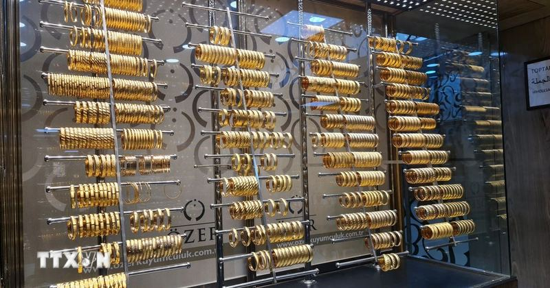
🔥
⚡
Xuất nhập khẩu Việt Nam vượt mốc 1.000 tỷ USD: Củng cố vai trò là một mắt xích quan trọng trong chuỗi cung ứng toàn cầu
Trong đó, xuất khẩu đạt khoảng 493,64 tỷ USD, tăng 27,2%; nhập khẩu đạt 507,66 tỷ USD, tăng 37,6% so với cùng kỳ năm trước. Dự kiến xuất khẩu cả năm tăng trên 25%, vượt mục tiêu Chính phủ đề ra. Cột mốc mới của thương mạ
⚡
10 tháng năm 2026: Kim ngạch xuất nhập khẩu hàng hóa Việt Nam vượt mốc 1.000 tỷ USD
Theo ước tính của Bộ Công Thương, tổng kim ngạch xuất nhập khẩu hàng hóa của Việt Nam trong 10 tháng năm 2026 đạt 1.010,6 tỷ USD, tăng 32,3% so với cùng kỳ năm trước. Kết quả này tiếp tục khẳng định vai trò quan trọng củ
🔥
Nhà thầu Trung Quốc trúng gói thầu hơn 20.000 tỷ đồng tại Đồng Nai: Nhà máy công suất 2,4 triệu tấn/năm, nằm trong tổ hợp bauxite quy mô hơn 10.000 ha
Nhà thầu Trung Quốc trúng gói thầu hơn 20.000 tỷ đồng tại Đồng Nai: Nhà máy công suất 2,4 triệu tấn/năm, nằm trong tổ hợp bauxite quy mô hơn 10.000 ha Theo Anh Khôi | 29/10/2026 15:49 PM | Kinh tế vĩ mô Theo dõi Cafebiz.
🔥
🔥
 ⚡
⚡
🔥
Ông Zelensky muốn đàm phán với ông Trump và ông Putin trước thượng đỉnh Mỹ - Trung - Nga
Tổng thống Zelensky muốn đàm phán với Mỹ, Nga trước thượng đỉnh ba bên Tổng thống Volodymyr Zelensky cho biết Kiev mong muốn tổ chức cuộc gặp giữa các phái đoàn Ukraine, Mỹ và Nga tại Abu Dhabi trước cuộc gặp dự kiến giữ
⚡
⚡
⚡
⚡
TP.HCM tách làn xe container với xe máy, ô tô con trên đường Võ Chí Công
Chiều 29.10, tại họp báo kinh tế - xã hội định kỳ, Sở Xây dựng TP.HCM thông tin, đường Võ Chí Công , hướng từ cầu Phú Mỹ đến nút giao Mỹ Thủy, hiện được tổ chức phân làn nhằm tách dòng xe tải nặng, xe container với các p
 ⚡
⚡
Kim ngạch xuất nhập khẩu trong 10 tháng tăng 32,3%, vượt mốc 1.000 tỷ USD
Facebook Twitter Lưu bài viết Bản in Copy link Theo số liệu của Cục Xuất nhập khẩu (Bộ Công Thương), tổng kim ngạch xuất nhập khẩu hàng hóa của Việt Nam trong 10 tháng năm 2026 ước đạt 1.010,6 tỷ USD, vượt mốc 1.000 tỷ U
🔥
🔥
⚡
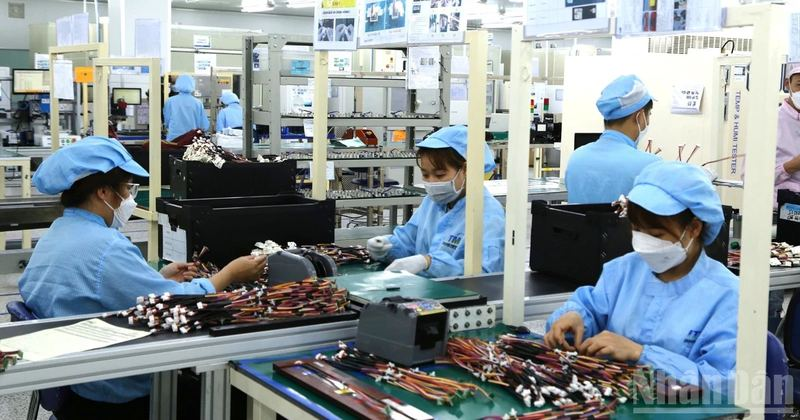
⚡
🔥
🔥
🔥
Giá xăng dầu hôm nay 29/10: Thế giới tăng, trong nước chiều nay điều chỉnh
Giá dầu thế giới hôm nay Giá dầu quốc tế trong phiên giao dịch 28/10 quay đầu tăng sau khi giảm ở hai phiên đầu tuần. Chốt phiên giao dịch 28/10, theo Reuters, giá dầu Brent tăng 1,26%, lên mức 115,3 USD/thùng. Còn giá d
🔥
⚡
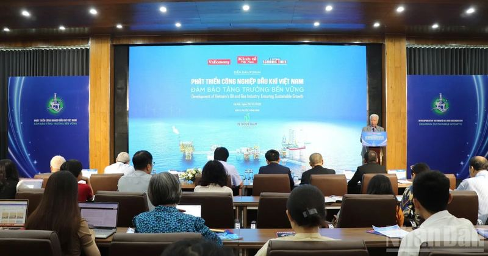
⚡Tái cấu trúc ngành dầu khí theo chuỗi giá trị hướng đến tăng trưởng bền vững
Ngày 29/10, tại Hà Nội, Tạp chí Kinh tế Việt Nam-VnEconomy-Vietnam Economic Times tổ chức diễn đàn “Phát triển công nghiệp dầu khí Việt Nam: bảo đảm tăng trưởng bền vững”. Phát biểu khai mạc diễn đàn, ông Đào Quang Bính,
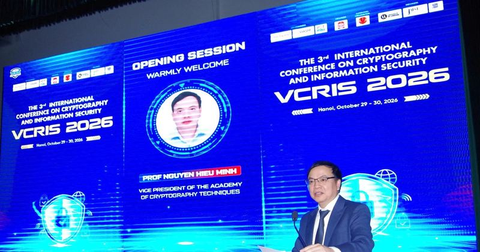
⚡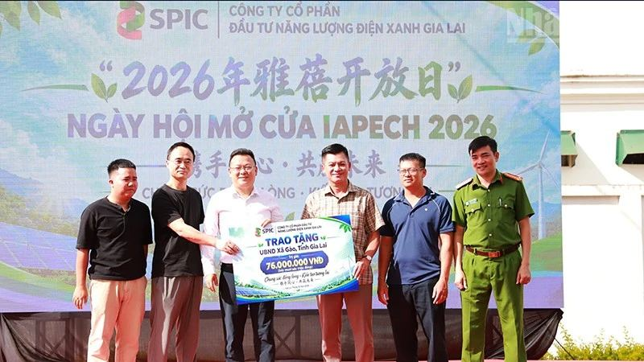
⚡
⚡
Bạn gái Mr Pips kể chuyện giữ 'kho' vàng 222 tỉ, trong tủ quần áo luôn có 44 tỉ tiền mặt và 1,7 triệu USD
Bị cáo Nguyễn Thanh Tâm (bạn gái Mr Pips) tại phiên tòa - Ảnh: GIANG LONG Mặc chiếc áo sơ mi trắng sơ vin cùng quần âu đen, Nguyễn Thanh Tâm (31 tuổi), bạn gái Mr Pips, đứng trước bục khai báo phiên xử chiều 2
🔥
🔥
⚡
Bỏ địa chỉ 10 năm, phải làm 40 tờ khai, 10 bộ báo cáo và tốn 55 triệu đồng để giải thể doanh nghiệp
Quy định hiện nay cũng chưa có cơ chế giảm mức phạt cho trường hợp doanh nghiệp đã bỏ địa chỉ kinh doanh quay lại khắc phục để đóng mã số thuế - Ảnh minh họa: N.P Tại dự thảo Nghị quyết của Chính phủ ban hành chính sách
⚡
Sở Xây dựng TP.HCM nói về đề xuất cho ô tô chạy thêm làn trên đường Võ Chí Công
Theo Sở Xây dựng TP.HCM, lượng xe chạy trên trục đường Võ Chí Công - cầu Phú Mỹ - Mỹ Thủy đã giảm từ khi cao tốc Bến Lức - Long Thành khai thác toàn tuyến - Ảnh: CHÂU TUẤN Tại họp báo kinh tế - xã hội TP.HCM chiều 29-10,
⚡
⚡
⚡
Từ Microsoft và Flappy Bird của Nguyễn Hà Đông, làm gì để doanh nghiệp lớn lên?
Chiều 29.10, Quốc hội thảo luận tại hội trường về luật Phát triển doanh nghiệp nhỏ và vừa. Theo đại biểu Nguyễn Hải Long (đoàn Đà Nẵng), năm 1975, Bill Gates mới 19 tuổi cùng người bạn 22 tuổi đã lập ra Microsoft. Năm 19
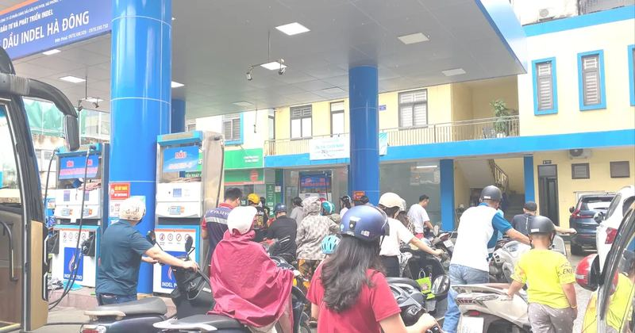
🔥
🔥
Điện Máy Xanh dự kiến doanh thu hơn 8 tỷ USD vào năm 2030, lợi nhuận tăng gấp 3 lần sau 5 năm
Điện Máy Xanh dự kiến doanh thu hơn 8 tỷ USD vào năm 2030, lợi nhuận tăng gấp 3 lần sau 5 năm Quảng Định | 29/10/2026 15:18 PM | Kinh doanh Theo dõi Cafebiz.vn trên Khép lại 9 tháng đầu năm với loạt con số kinh doanh tăn
🔥
Đọc nhanh 29-10: Phố Wall đi lên khi Fed giữ nguyên lãi suất, Thế Giới Di Động lập kỷ lục mới
VN-Index được dự báo tiếp tục đi lên - Ảnh: HỮU HẠNH Điểm nhanh chứng khoán thế giới Chốt phiên giao dịch chứng khoán 28-10, chỉ số Dow Jones tăng 97,53 điểm (0,19%) lên 52.475 điểm, S&P 500 tăng 0,28% lên 7.744 điểm và
🔥
🔥
Chủ tịch Fed: “Liều thuốc” tiền tệ đang ngấm, sẽ giảm số cuộc họp lãi suất
(Dân trí) - Khép lại cuộc họp tháng 10, Fed quyết định giữ nguyên lãi suất ở mức 3,75-4%, đồng thời Chủ tịch Fed công bố kế hoạch bất ngờ về việc giảm bớt số cuộc họp bàn lãi suất trong tương lai. Đúng như dự đoán của th
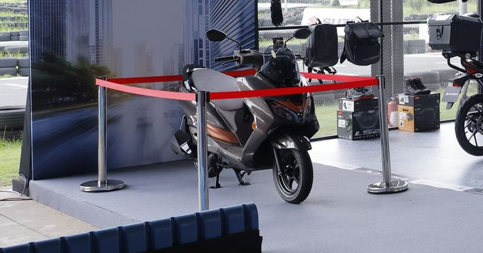
⚡
⚡
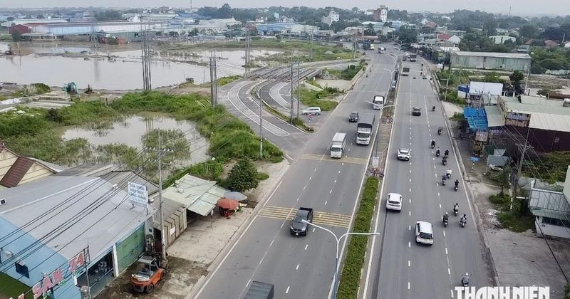
🔥Cao tốc TP.HCM - Thủ Dầu Một - Chơn Thành: Mặt bằng đã bàn giao đến đâu?
Chiều 29.10, tại buổi họp báo về các vấn đề kinh tế - xã hội trên địa bàn TP.HCM, Ban Giao thông TP.HCM có văn bản trả lời báo chí về tiến độ dự án cao tốc TP.HCM - Thủ Dầu Một - Chơn Thành đoạn qua khu vực Bình Dương cũ
🔥
Nguyên CEO Bosch Việt Nam hiến kế TP.HCM thành 'đất lành' phát triển công nghệ cao
Ông Võ Quang Huệ - nguyên Tổng giám đốc Bosch Việt Nam, nguyên Phó tổng giám đốc Vingroup phụ trách ngành ô tô - Ảnh: NGỌC ĐỨC Làm thế nào để doanh nghiệp mạnh dạn đầu tư cho nghiên cứu phát triển (R&D), giúp TP.HCM phát
🔥
TPHCM ưu tiên hợp tác với Israel về an ninh mạng và nông nghiệp thông minh
Đại sứ Israel tại Việt Nam Irit Savion Waidergorn (trái) cùng Trưởng Văn phòng Kinh tế và Thương mại Israel tại Việt Nam Chen Peretz tham dự Ngày Đổi mới sáng tạo Việt Nam - Israel 2026. Ảnh: HÙNG - TRIỀU Thông tin tại s
🔥
Kỷ nguyên điện ảnh AI năm 2026: Sự thật về những bộ phim dài hàng giờ và cách sản xuất
Kỷ nguyên điện ảnh AI năm 2026: Sự thật về những bộ phim dài hàng giờ và cách sản xuất Theo Đức Khương | 29/10/2026 16:00 PM | Công nghệ Theo dõi Cafebiz.vn trên Phim tạo bằng AI không còn dừng lại ở những đoạn video ngắ
🔥
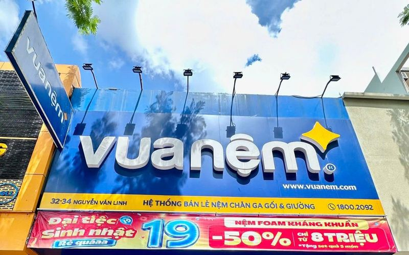
🔥Doanh thu thương mại điện tử Vua Nệm 9 tháng vượt hai lần cả năm 2025: Động lực từ đâu?
TIN MỚI Đằng sau kết quả này là chiến lược phát triển danh mục theo nhu cầu khách hàng, khai thác lợi thế bán lẻ đa kênh và ứng dụng công nghệ để nâng cao hiệu quả vận hành. Tăng trưởng vượt bậc, cơ cấu doanh thu chuy
🔥
Hãng tàu CMA CGM đưa sà lan điện đầu tiên vào vận tải container tại Việt Nam
Sà lan điện đầu tiên tại Việt Nam đưa vào hoạt động cảng nước sâu Gemalink - Ảnh: CM Đây là giải pháp vận tải mới nhằm giảm phát thải trong chuỗi cung ứng hàng hóa xuất khẩu tại Việt Nam. Sạc pin 4 giờ, sử dụng năng lượn
🔥
Nga - Ukraine thực thi lệnh ngừng bắn cục bộ, mời nhà báo Mỹ tới thực địa
(Dân trí) - Các nhà báo Mỹ sẽ tới thành phố Oleshky để ghi nhận tình hình thực thi lệnh ngừng bắn của Nga và Ukraine. Cảnh vắng vẻ tại thành phố Oleshky ở Kherson, Ukraine vào tháng 9 (Ảnh: Reuters). Trong thông báo trên
🔥
🔥
Loạt đồng minh bất ngờ quay lưng với trái phiếu Mỹ: Một quốc gia thân thiết giảm 99% lượng mua nợ
TIN MỚI Theo phân tích dữ liệu Bộ Tài chính và Bộ Ngoại giao Mỹ, nhóm quốc gia và vùng lãnh thổ có quan điểm gần gũi nhất với Washington chỉ mua ròng 174,3 tỷ USD trái phiếu chính phủ Mỹ trong 8 tháng đầu năm 2026, giảm
🔥
⚡
Công an Hà Nội hỗ trợ Tư lệnh Cảnh sát Liên hợp quốc tìm lại điện thoại đánh rơi
Ông Faisal Shahkar nhận lại chiếc điện thoại không may đánh rơi. Theo Công an TP Hà Nội, trước đó, trong chuyến thăm và làm việc tại Việt Nam, ông Faisal Shahkar – Tư lệnh Cảnh sát Liên hợp quốc đã không may làm rơi chiế
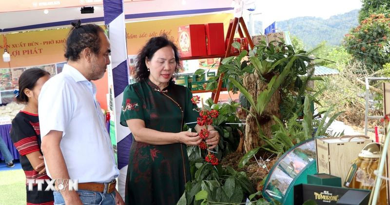
⚡Quảng Ngãi: Khai mạc Lễ hội sâm Ngọc Linh và phiên chợ hàng Việt về xã Măng Ri
Facebook Twitter Lưu bài viết Bản in Copy link Tối 29/10, Ủy ban Nhân dân xã Măng Ri phối hợp với Trung tâm Xúc tiến Đầu tư, Thương mại và Du lịch tỉnh Quảng Ngãi đã khai mạc Lễ hội sâm Ngọc Linh và phiên chợ hàng Việt v
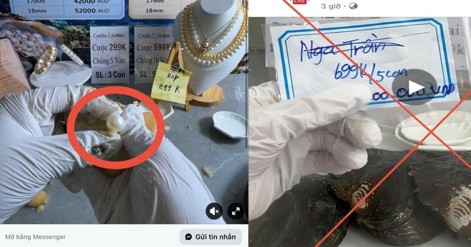
⚡
⚡
Thuế đất phi nông nghiệp: Chấn chỉnh sai sót, xử lý dứt điểm phản ánh của người dân
Dù đã hoàn thành rà soát 95,57% trong tổng số 3.372.799 tờ khai cần kiểm tra, công tác quản lý thuế sử dụng đất phi nông nghiệp vẫn còn một số bất cập Chuẩn hóa dữ liệu, khắc phục sai sót về thuế Thời gian qua, Cục Thuế
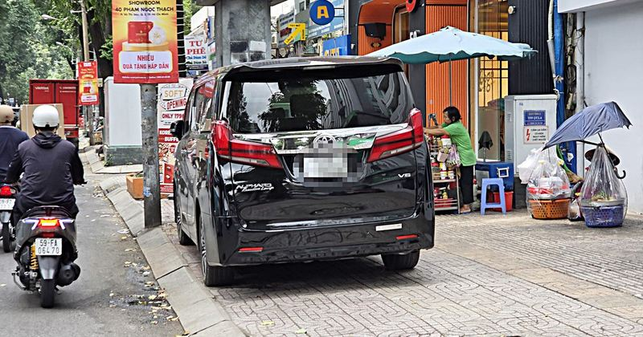
⚡TP.HCM: 106 vụ tai nạn liên quan dừng, đỗ xe sai quy định trong 10 tháng, 62 người chết
Một ô tô đỗ trên vỉa hè (đường Phạm Ngọc Thạch) sai quy định - Ảnh: M.H. Tại họp báo kinh tế - xã hội TP.HCM chiều 29-10, Thượng tá Đỗ Xuân Hoàn - Phó trưởng Phòng PC08 (Công an TP.HCM) - đã trao đổi về tình trạng ô tô d
⚡
Mỗi khi hưng phấn, Mr Pips vung tiền mua siêu xe và trang sức, 'cản không được'
Chiều 29.10, hội đồng xét xử TAND TP.Hà Nội xét hỏi bị cáo Nguyễn Thanh Tâm, bạn gái của Mr Pips Phó Đức Nam, bị truy tố về tội rửa tiền . Bị cáo Mr Pips Phó Đức Nam và Nguyễn Thanh Tâm tại tòa ẢNH: PHÚC BÌNH Căn hộ chứa
⚡
Bộ trưởng Bộ Tài chính: Tiếp tục làm việc với MSCI về nâng hạng chứng khoán
Bộ trưởng Bộ Tài chính Ngô Văn Tuấn cho biết, cơ quan quản lý đang làm việc với MSCI, Tổ chức xếp hạng chứng khoán toàn cầu, để đẩy nhanh tiến trình nâng hạng, nhưng mục tiêu này phải gắn với phát triển thị trường vốn. B
🔥
Iran tuyên bố bắt drone do thám của Mỹ, cảnh báo eo biển Hormuz 'không bao giờ được mở lại'
Tàu chở dầu Luojiashan neo đậu tại Muscat, Oman - Ảnh: REUTERS Đài Al Jazeera ngày 29-10 đưa tin Lực lượng Vệ binh Cách mạng Hồi giáo Iran (IRGC) đã bắt giữ một máy bay không người lái (drone) "trinh sát và ngụy trang" c
🔥
🔥
🔥
🔥
⚡
Nghi vấn xoay quanh an toàn đường sắt Tây Ban Nha sau hai vụ tai nạn chết người
Hiện trường vụ va chạm tàu cao tốc tại Tây Ban Nha ngày 28-10 - Ảnh: AP Theo báo Guardian , mạng lưới đường sắt tốc độ cao từ lâu là niềm tự hào của Tây Ban Nha, với quy mô lớn nhất châu Âu và đứng thứ hai thế giới, chỉ
⚡
Đài Loan phát hiện hơn 50 tàu Trung Quốc trải dài từ Nhật Bản xuống Philippines, Bắc Kinh lên tiếng
Tàu sân bay Liêu Ninh của Trung Quốc - Ảnh: REUTERS Ngày 29-10, Hãng Reuters đưa tin: Một quan chức cấp cao Đài Loan cho biết Trung Quốc đang triển khai hơn 50 tàu hải quân và các tàu công vụ khác trên một vùng biển rộng
⚡
Bộ trưởng Tài chính: Doanh nghiệp "sạch" nợ thuế, có thể giải thể trong 12 giờ
Chiều 29/10, Quốc hội thảo luận tại hội trường về dự án Luật Phát triển doanh nghiệp nhỏ và vừa. Đại biểu Nguyễn Hải Long (TP Đà Nẵng) dẫn chứng từ lịch sử phát triển công nghệ thế giới, những tập đoàn khổng lồ như Micro
⚡
⚡
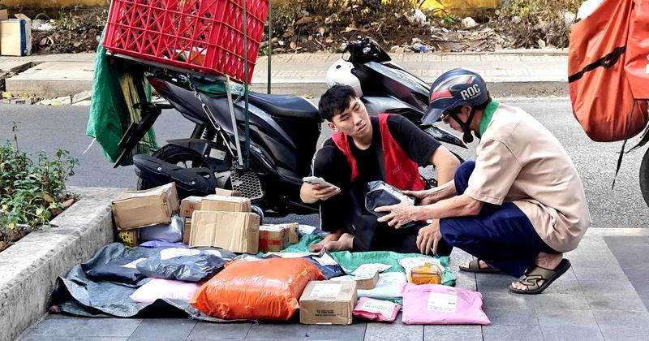
🔥
🔥
Phó Thủ tướng Hồ Quốc Dũng dự khánh thành đường cất cánh số 2 Cảng hàng không Phù Cát, Gia Lai
Phó Thủ tướng Hồ Quốc Dũng dự Lễ khánh thành Dự án xây dựng đường cất hạ cánh số 2 và đón chuyến bay quốc tế đến Cảng hàng không Phù Cát - Ảnh: chinhphu.vn/Gia Huy Hai sự kiện đánh dấu bước phát triển mới của hạ tầng hàn
🔥
🔥
🔥
Trung Quốc góp 30% cho tăng trưởng GDP toàn cầu, cơ quan của Quốc vụ viện nói về vị thế của Nam bán cầu
Trung Quốc góp 30% cho tăng trưởng GDP toàn cầu, cơ quan của Quốc vụ viện nói về vị thế của Nam bán cầu Trần Chung | 29/10/2026 10:30 AM | Kinh tế vĩ mô Theo dõi Cafebiz.vn trên Cục diện kinh tế toàn cầu đang trải qua nh
🔥
🔥
Chuyên gia: “Lãi suất hạ nhiệt, người mua nhà cần cân nhắc giữa chờ đợi và nắm bắt cơ hội”
TIN MỚI Song song với đà phục hồi của thị trường, giá tài sản và lợi thế lựa chọn có thể thay đổi theo diễn biến cung - cầu và tiến độ hoàn thiện hạ tầng. Người mua càng chờ đợi tín hiệu rõ ràng, lợi thế về giá và khả nă
🔥
Phê duyệt Kế hoạch cơ cấu lại vốn nhà nước tại doanh nghiệp giai đoạn 2026-2030
Theo đó, Phó Thủ tướng giao Bộ Tài chính và Ngân hàng Nhà nước Việt Nam có trách nhiệm tổ chức thực hiện việc cơ cấu lại vốn nhà nước tại doanh nghiệp giai đoạn 2026-2030 đối với các doanh nghiệp nêu tại Phụ lục II kèm t
🔥
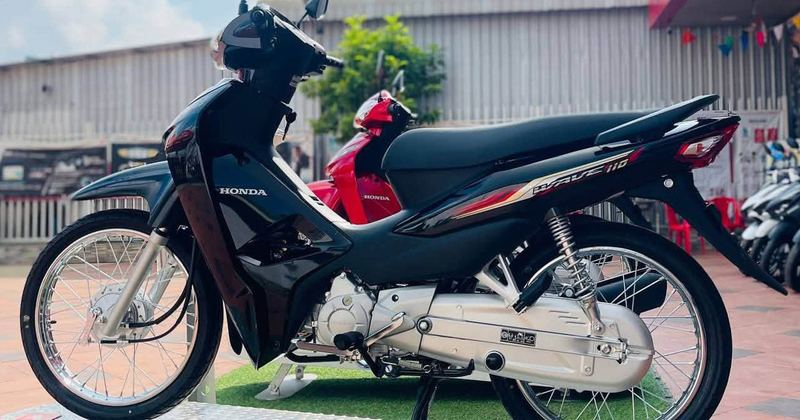
⚡Honda Wave Alpha mới ra mắt Đông Nam Á, có một tiện ích bản Việt không có
Honda Wave 110 mới đã có mặt ở đại lý Honda ở Campuchia - Ảnh: Đại lý Honda Wave 110 (tương đương Honda Wave Alpha ở Việt Nam) phiên bản mới đã có mặt tại các đại lý ở Campuchia. Xe được bán với giá 1.350 USD (gần 35 tri
⚡
🔥
🔥
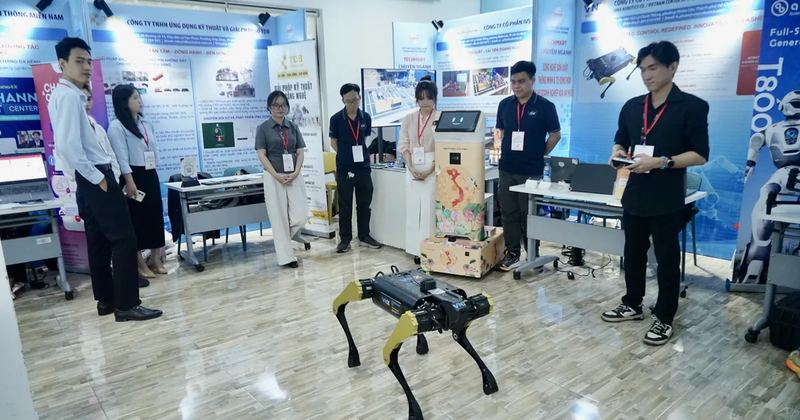
🔥
🔥
🔥
🔥
🔥
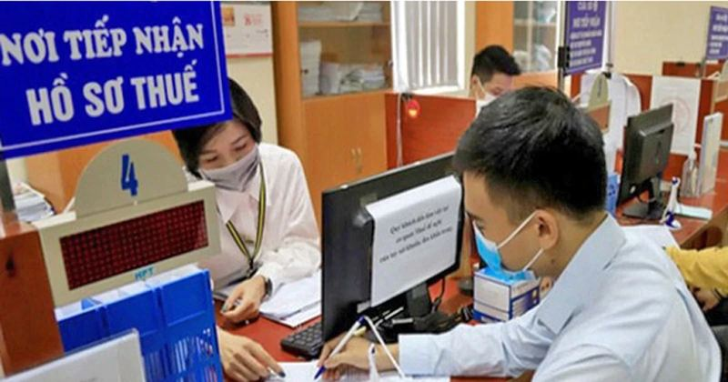
🔥
🔥
Tập đoàn Xuân Thiện muốn rót 450.000 tỷ đồng vào Lai Châu làm 9 dự án điện mặt trời, thủy điện cùng trạm biến áp…: Lãnh đạo tỉnh nói gì?
Tập đoàn Xuân Thiện muốn rót 450.000 tỷ đồng vào Lai Châu làm 9 dự án điện mặt trời, thủy điện cùng trạm biến áp… Phan Trang | 29/10/2026 08:50 AM | Kinh doanh Theo dõi Cafebiz.vn trên Lãnh đạo tỉnh Lai Châu cho biết đề
🔥
🔥
🔥
🔥
10 người đàn ông đẹp trai nhất thế giới hiện tại theo nghiên cứu khoa học
TIN MỚI Bác sĩ Julian De Silva, một bác sĩ phẫu thuật thẩm mỹ khuôn mặt làm việc tại London (Anh), đã sử dụng Tỷ lệ vàng về vẻ đẹp của người Hy Lạp cổ đại để xác định 10 gương mặt nam nổi tiếng thu hút nhất. "Những kỹ th
🔥
🔥
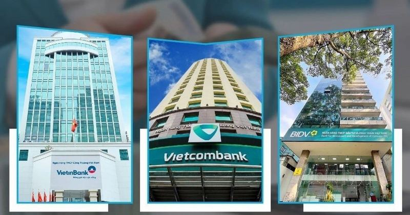
🔥
⚡
Chuyên gia quốc tế chỉ ra những việc Việt Nam cần làm để trở thành nước giàu
Người dân mua vàng tại một tiệm vàng ở TP.HCM - Ảnh: QUANG ĐỊNH Tại Diễn đàn Kinh tế mùa thu 2026, các chuyên gia quốc tế đã chia sẻ những giải pháp giúp Việt Nam duy trì tăng trưởng và nâng cao năng suất, từ cải thiện h
⚡
⚡
[Video] Luật phát triển doanh nghiệp nhỏ và vừa: Cần kênh dẫn để doanh nghiệp tiếp cận nguồn vốn
Tại phiên thảo luận, các đại biểu Quốc hội đề nghị hoàn thiện cơ chế để doanh nghiệp thực sự tiếp cận được nguồn vốn và thụ hưởng các chính sách hỗ trợ. Doanh nghiệp nhỏ và vừa hiện chiếm hơn 98% tổng số doanh nghiệp. Tu
⚡
Hỗ trợ phát triển doanh nghiệp nhỏ và vừa đúng đối tượng, gắn với an sinh
Facebook Twitter Lưu bài viết Bản in Copy link Tinh thần chung là chính sách hỗ trợ là trọng tâm, gắn kết chặt chẽ với các mục tiêu an sinh xã hội và ưu tiên những vùng kinh tế còn nhiều khó khăn. Tại phiên thảo luận ở H
⚡
Cục Thuế yêu cầu xử lý dứt điểm vướng mắc về thuế sử dụng đất phi nông nghiệp
Facebook Twitter Lưu bài viết Bản in Copy link Cơ quan thuế đã hoàn thành rà soát 95,57% trong tổng số 3.372.799 tờ khai thuế sử dụng đất phi nông nghiệp cần rà soát. Tuy nhiên, tình trạng dữ liệu người nộp thuế, thửa đấ
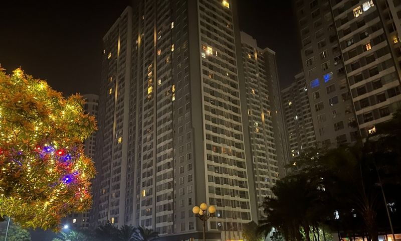
⚡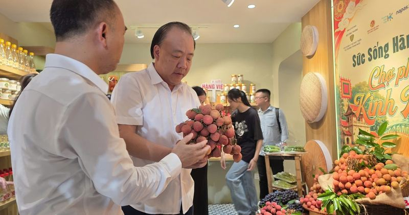
⚡Truy xuất nguồn gốc hàng hóa: Công cụ bảo vệ người tiêu dùng và doanh nghiệp
Khuyến khích tổ chức, cá nhân sản xuất, kinh doanh ứng dụng mã số, mã vạch trong quản lý chất lượng, truy xuất nguồn gốc sản phẩm, hàng hóa Truy xuất nguồn gốc không chỉ giúp người tiêu dùng biết hàng hóa đến từ đâu mà c
⚡
🔥
Máy bay nghiêng cánh chào sân bay Phù Cát trong ngày khai thác đường băng số 2
Chiếc máy bay chở đoàn khách quốc tế từ Macao, Trung Quốc, nghiêng nhẹ cánh chào quan khách khi bay qua sân bay Phù Cát trước khi lượn vòng trở lại đáp xuống đường băng số 2 vừa đưa vào khai thác chiều 29-10 - Ảnh: TẤN L
🔥
🔥
Cập nhật BCTC quý 3/2026 chiều tối ngày 29/10: Vinpearl lãi gấp 5 lần cùng kỳ, VIB, PVTrans, Becamex IDC... cùng nhiều doanh nghiệp lớn công bố
Cập nhật BCTC quý 3/2026 chiều tối ngày 29/10: Vinpearl lãi gấp 5 lần cùng kỳ, VIB, PVTrans, Becamex IDC... cùng nhiều doanh nghiệp lớn công bố Theo Ngọc Điệp | 29/10/2026 16:54 PM | Kinh doanh Theo dõi Cafebiz.vn trên B
🔥
🔥
Lãi suất thả nổi lên 14-16%/năm: Chuyên gia chỉ rõ thời điểm cần tính chuyện bán tài sản
Lãi suất thả nổi lên 14-16%/năm: Chuyên gia chỉ rõ thời điểm cần tính chuyện bán tài sản Phan Trang | 29/10/2026 16:40 PM | Kinh doanh Theo dõi Cafebiz.vn trên Chuyên gia nhấn mạnh khi khoản trả nợ gốc và lãi chiếm 60-70
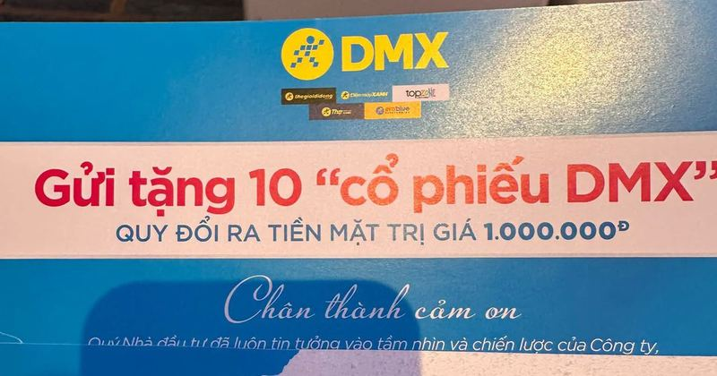
🔥
🔥
Đoàn đại biểu quốc tế tham dự AEF 2026 thăm, làm việc tại Tập đoàn Becamex
Theo đó, đoàn đại biểu quốc tế gồm có đại diện các tổ chức phát triển, quỹ đầu tư và doanh nghiệp công nghệ đến từ Nhật Bản, Hàn Quốc, Singapore, Tổ chức Phát triển công nghiệp Liên hợp quốc (UNIDO)... Đoàn đại biểu quốc
🔥
🔥
🔥
🔥
Tăng tốc giải ngân, khơi thông nguồn lực, tạo đột phá tăng trưởng kinh tế quý IV/2026
Trước áp lực hoàn thành mục tiêu tăng trưởng năm 2026, Sơn La, Cần Thơ, Hà Nội và Đồng Nai đang tập trung tháo gỡ điểm nghẽn, đẩy nhanh giải ngân đầu tư công và huy động nguồn lực xã hội. Phát huy lợi thế từng địa phương
🔥
27 năm đồng hành cùng tăng trưởng kinh tế và bảo vệ thành quả tài chính của khách hàng
Sáng ngày 29/10/2026, tại Diễn đàn Doanh nghiệp Anh - Việt 2026 tổ chức tại TP. Hồ Chí Minh với chủ đề “Tầm nhìn 2045”: Kiến tạo nền kinh tế có thu nhập cao, giá trị cao”, Prudential Việt Nam đã tham gia thảo luận về vai
🔥
Petrovietnam và 6 đơn vị thành viên ghi dấu ấn 'Doanh nghiệp Văn hóa, Uy tín năm 2026'
Đoàn công tác lãnh đạo Petrovietnam thăm, chúc Tết và tặng quà người lao động trên công trường Dự án Lô B, Trung tâm Công nghiệp Năng lượng và Hậu cần Kỹ thuật PTSC (Phường Vũng Tàu, TPHCM) tháng 1/2026 Lễ công bố và vin
🔥
Hy vọng cải tạo môi trường kênh Hy Vọng vì được đề xuất đầu tư 2.546 tỉ đồng làm kè, đường hai bên
Thành viên câu lạc bộ Sài Gòn Xanh bên robot vớt rác trên kênh Hy Vọng - Ảnh: Câu lạc bộ Sài Gòn Xanh Sáng 29-10, HĐND TP.HCM bắt đầu kỳ họp thứ 6 (kỳ họp chuyên đề). Sau khi khai mạc, bà Nguyễn Trường Nhật Phượng, Phó c
🔥
🔥
🔥
Trung Quốc mất hơn 3 năm, Qatar và Úc cần 6 năm, còn tỷ phú Trần Bá Dương dự kiến cần bao lâu để hoàn thành tuyến metro 55.000 tỷ đồng tại thành phố giàu nhất Việt Nam?
TIN MỚI Tuyến metro số 2 đoạn Bến Thành – Tham Lương là một trong những dự án đường sắt đô thị trọng điểm của TP.HCM. Dự án có chiều dài khoảng 11,27 km, gồm 10 ga ngầm, 1 ga trên cao và depot Tham Lương, với tổng mức đầ
⚡
Khai mạc Lễ hội sâm Ngọc Linh và Phiên chợ hàng Việt tại tỉnh Quảng Ngãi
Ông Hồ Văn Niên, Bí thư Tỉnh ủy Quảng Ngãi tham dự Lễ hội sâm Ngọc Linh và phiên chợ hàng Việt về xã Măng Ri năm 2026. Tham dự có ông Hồ Văn Niên, Ủy viên Trung ương Đảng, Bí thư Tỉnh ủy Quảng Ngãi. Lễ hội diễn ra từ ngà
⚡
⚡
Vincom Retail báo lãi tăng 25% sau 9 tháng, nắm giữ hơn 2.200 tỷ đồng trái phiếu
Trung tâm thương mại Vincom Plaza Lê Thánh Tông, Hải Phòng. Ảnh: Mộc An/Mekong ASEAN. CTCP Vincom Retail ( HoSE: VRE) ngày 29/10 công bố báo cáo tài chính quý 3/2026 với doanh thu thuần hợp nhất đạt 2.374 tỷ đồng, tăng 5
⚡
Tin nổi bật ngày 29/10: Tổng Bí thư, Chủ tịch nước dự Lễ kỷ niệm 30 năm Ngày thành lập Hội đồng Lý luận Trung ương; Sửa Luật Đất đai
Tiếp tục đóng góp vào phát triển lý luận, hoàn thiện đường lối lãnh đạo, cầm quyền của Đảng Sáng 29/10, tại Hà Nội, Hội đồng Lý luận Trung ương tổ chức Lễ kỷ niệm 30 năm Ngày thành lập (30/10/1996-30/10/2026) và đón nhận
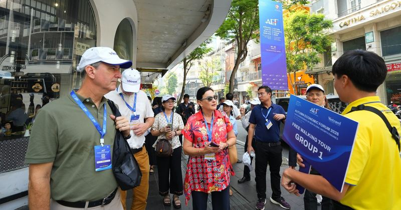
⚡Chính khách, chuyên gia quốc tế trải nghiệm nhịp sống TP.HCM qua tour đi bộ
Bà Irit Savion Waidergorn, Đại sứ được bổ nhiệm của Israel tại Việt Nam (áo đỏ, đeo kính) đã dành một buổi sáng tham gia Walkingtour trải nghiệm cuộc sống đô thị TP.HCM. Dù thời tiết nắng nóng, nhưng nữ đại sứ đã dành lờ
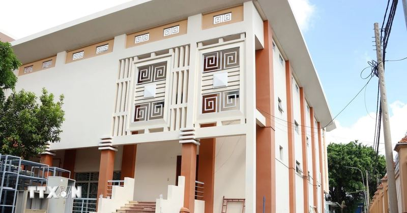
⚡
⚡
⚡
⚡
Hành trình khởi nghiệp của Zhou Qunfei từ công nhân thành phú bà 426 nghìn tỷ đồng
16 tuổi bỏ học làm công nhân kiếm 26 nghìn/ngày, 40 năm sau trở thành “phú bà” sở hữu 426 nghìn tỷ đồng Theo Ngọc Linh | 29/10/2026 20:02 PM | Kinh doanh Theo dõi Cafebiz.vn trên Quá nghèo nên không có tiền đi học, giờ l
⚡
⚡
[Video] Thời sự 24h ngày 29/10: Tổng Bí thư, Chủ tịch nước: Đổi mới tư duy, nâng cao chất lượng nghiên cứu lý luận, tư vấn chiến lược trong giai đoạn phát triển mới
Tóm tắt một số nội dung đáng chú ý có trong bản tin Thời sự 24h ngày 29/10/2026: - Sáng 29/10, tại Hà Nội, Hội đồng Lý luận Trung ương tổ chức Lễ kỷ niệm 30 năm Ngày thành lập (30/10/1996 – 30/10/2026) và đón nhận Huân c
⚡
[Video] Dự báo thời tiết đêm nay và ngày mai 30/10/2026: Đông Bắc Bộ có nơi mưa to, Trung Bộ tiếp tục mưa dông
Tại Bắc Bộ, khối không khí lạnh lục địa đang suy yếu và dịch chuyển lệch đông, kết hợp với vùng hội tụ gió Đông Nam yếu trên cao. Tây Bắc Bộ có mưa rào và dông vài nơi. Riêng Đông Bắc Bộ có mưa dông rải rác, cục bộ mưa t
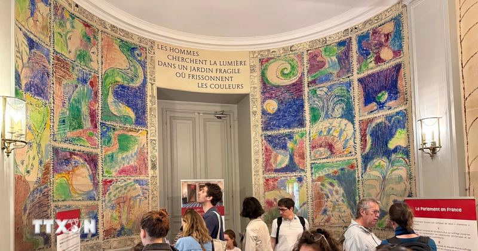
⚡
⚡
Tưởng concert nào vừa 'cháy vé', hóa ra là CineTour Chị Chị Em Em 3 trên VNPAY Phim!
Tưởng săn vé concert, hóa ra là CineTour Chị Chị Em Em 3! Cơ hội vừa xem phim, vừa gặp gỡ dàn cast khiến các suất CineTour Chị Chị Em Em 3 trở thành cuộc hẹn được hội mê điện ảnh mong chờ. Chưa đến ngày giao lưu, không k
⚡
Tăng cường phối hợp, triển khai hiệu quả giai đoạn 2 Chiến dịch 500 ngày đêm
Facebook Twitter Lưu bài viết Bản in Copy link Chiều 29/10, Ban Chỉ đạo tìm kiếm, quy tập và xác minh danh tính hài cốt liệt sỹ Thành phố Hồ Chí Minh (Ban Chỉ đạo thành phố), tổ chức Hội nghị tổng kết thực hiện nhiệm vụ
 ⚡
⚡
⚡
Tuổi Trẻ Startup Award 2026: Lộ diện 11 gương mặt xuất sắc vào vòng Chinh phục
Chờ gương mặt xuất sắc của Tuổi Trẻ Startup Award 2026 - Ảnh: DUYÊN PHAN Sau chặng đua sàng lọc khắt khe từ hàng trăm hồ sơ khởi nghiệp trên cả nước, Hội đồng chuyên môn của Giải thưởng Tuổi Trẻ Startup Award 2026 đã chí
⚡
Trung Quốc bầu bổ sung ủy viên Bộ Chính trị, ủy viên Trung ương Đảng, thông báo kỷ luật hàng chục cán bộ cấp cao
Hội nghị Trung ương 5 (diễn ra từ ngày 26-29/10 với sự tham gia của 162 Ủy viên Trung ương và 117 Ủy viên dự khuyết) đã thông qua “Quyết định của Trung ương Đảng Cộng sản Trung Quốc về một số vấn đề quan trọng trong việc
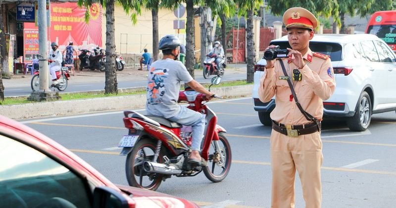
⚡Cần Thơ tăng phạt nguội, ô tô đậu trên vỉa hè, xe đi ngược chiều đều bị ghi hình
Cảnh sát giao thông ghi hình xe vi phạm dừng đỗ sai quy định trên đường Nguyễn Văn Cừ ngày 29-10 - Ảnh: NGỌC HÂN Ngày 29-10, phóng viên Tuổi Trẻ theo chân tổ công tác thuộc Đội Cảnh sát giao thông đường bộ số 1, Phòng Cả
⚡
⚡
⚡
⚡
⚡
Hội nghị Trung ương 5 Trung Quốc: Bầu bổ sung ông Trương Thăng Dân vào Bộ Chính trị
Ông Tập Cận Bình cùng các lãnh đạo cấp cao Trung Quốc trên bục chủ tọa Hội nghị Trung ương 5 khóa XX - Ảnh: TÂN HOA XÃ Theo thông cáo do Tân Hoa xã công bố ngày 29-10, Ban Chấp hành Trung ương Đảng Cộng sản Trung Quốc qu
⚡
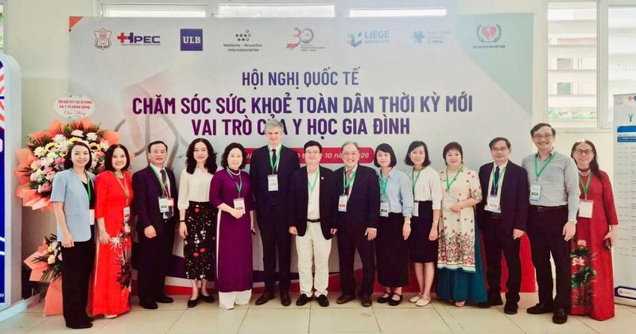
⚡
⚡
Phát hiện 3 hành tinh "sống sót thần kỳ" vốn đã bị các ngôi sao nuốt chửng
Facebook Twitter Lưu bài viết Bản in Copy link Lâu nay các nhà khoa học vẫn cho rằng khi các ngôi sao già đi, chúng sẽ giãn nở, nuốt chửng những hành tinh ở quá gần. Tuy nhiên, các nhà khoa học thuộc Trường Vật lý và Thi
⚡
⚡
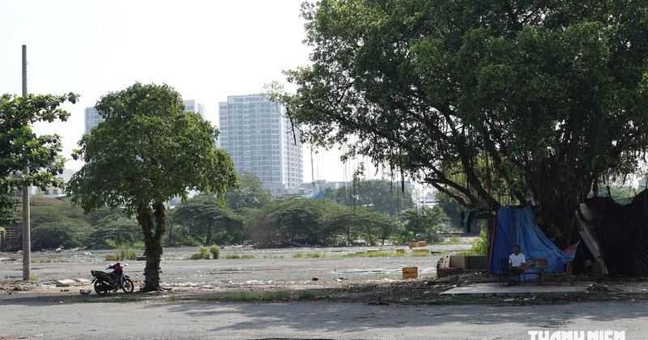
⚡
⚡
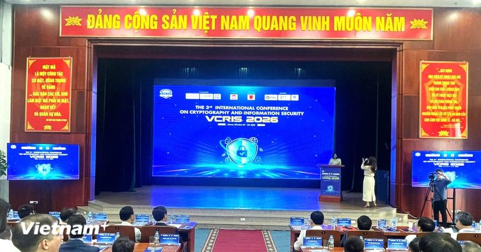
🔥
🔥
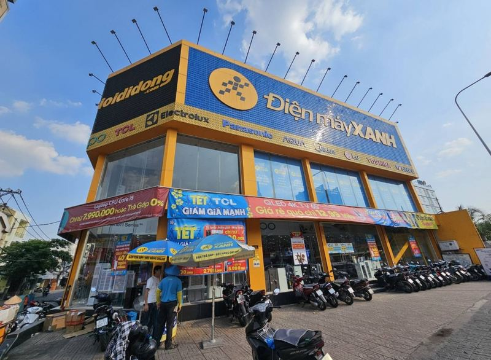
🔥Điện Máy Xanh: Lợi nhuận quý III tăng gấp đôi, chất lượng dòng tiền cần được theo dõi
Quý III/2026, Điện Máy Xanh ghi nhận lợi nhuận sau thuế 2.825 tỷ đồng, tăng 104,7% so với cùng kỳ. Biên lợi nhuận gộp cải thiện rõ rệt, nhưng dòng tiền kinh doanh 9 tháng giảm và hàng tồn kho tăng. Diễn biến này đặt ra y
🔥
Doanh nghiệp casino duy nhất trên sàn chứng khoán tiếp tục thua lỗ, nâng lỗ lũy kế hơn 600 tỷ
Doanh nghiệp casino duy nhất trên sàn chứng khoán tiếp tục thua lỗ, nâng lỗ lũy kế hơn 600 tỷ Theo An Thái | 29/10/2026 16:40 PM | Kinh doanh Theo dõi Cafebiz.vn trên Doanh nghiệp có quý thua lỗ thứ 2 liên tiếp. CTCP Quố
🔥
🔥
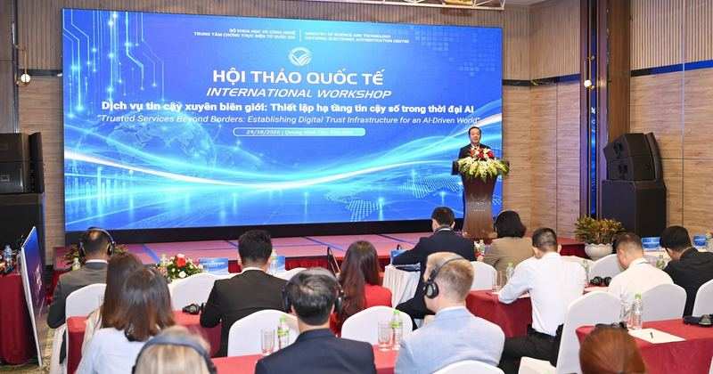
🔥
🔥
Doanh nghiệp Anh cùng Việt Nam tiến tới nền kinh tế thu nhập cao, giá trị cao
Diễn đàn là sự kiện đối thoại kinh tế thường niên lớn nhất của BritCham ảnh: thụy miên Diễn đàn Doanh nghiệp Vương quốc Anh - Việt Nam là sự kiện đối thoại kinh tế thường niên lớn nhất của Hiệp hội Doanh nghiệp Anh quốc
🔥
Xếp hạng tín nhiệm trái phiếu ngân hàng: Cần thêm cơ sở để định giá rủi ro
Ngân hàng chiếm khoảng 46% giá trị trái phiếu doanh nghiệp đang lưu hành, nhưng phạm vi trái phiếu được xếp hạng tín nhiệm trong nước còn hạn chế. Theo VIS Rating, khoảng trống thông tin khiến nhà đầu tư khó so sánh chất
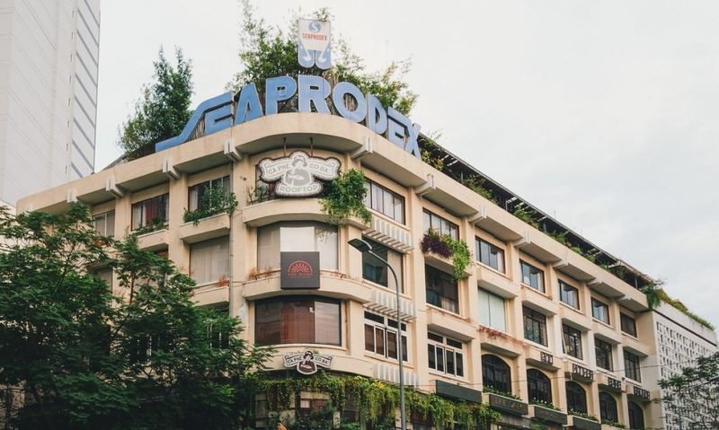
🔥
🔥
🔥
🔥
🔥
Quốc hội làm việc về Luật Đất đai, Luật Phát triển doanh nghiệp nhỏ và vừa
Facebook Twitter Lưu bài viết Bản in Copy link Ngày 29/10, Quốc hội tiếp tục ngày làm việc của Kỳ họp thứ hai, (Quốc hội khóa XVI) với nhiều nội dung quan trọng liên quan đến dự án Luật Đất đai (sửa đổi), Luật Phát triển
🔥
Giá dầu tiếp tục tăng do lo ngại nguy cơ gián đoạn nguồn cung tại Trung Đông
Facebook Twitter Lưu bài viết Bản in Copy link Giá dầu thế giới tăng khoảng 1% trong phiên giao dịch ngày 28/10, khi thị trường lo ngại nguy cơ gián đoạn nguồn cung năng lượng tại Trung Đông gia tăng do giao tranh tiếp d
🔥
Phê duyệt Kế hoạch cơ cấu lại vốn nhà nước tại 21 doanh nghiệp giai đoạn 2026 - 2030
Phó Thủ tướng Nguyễn Văn Thắng ký Quyết định số 2054/QĐ-TTg ngày 27/10/2026 phê duyệt Kế hoạch cơ cấu lại vốn nhà nước tại doanh nghiệp giai đoạn 2026 - 2030. Theo đó, 15 doanh nghiệp tiếp tục giữ nguyên tỷ lệ vốn nhà nư
🔥
🔥
Bộ trưởng Bộ Tài chính: "Việt Nam có thể tăng trưởng mà không cần FDI được không? Xin thưa rằng câu trả lời rất đơn giản: Không thể!”
TIN MỚI Việt Nam không thể đạt mục tiêu tăng trưởng hai con số nếu thiếu vốn FDI Tại phiên thảo luận Tổ 5 (gồm Đoàn ĐBQH TP Quảng Ninh, TP Đà Nẵng và tỉnh Cao Bằng) về dự án Luật sửa đổi, bổ sung một số điều của Luật Đầu
⚡
Chung cư Linh Đàm, Xa La, Đại Thanh và Kim Văn-Kim Lũ: Người mua nhà hợp pháp được bảo vệ quyền lợi thế nào?
Ngày 28/10, Hội đồng nhân dân thành phố Hà Nội thông qua cơ chế đặc thù xử lý vi phạm đất đai, trật tự xây dựng tại 12 dự án liên quan Tập đoàn Mường Thanh. Tổng số căn hộ thực tế tăng lên 24.943 căn, vượt quy hoạch và g
⚡
⚡
⚡
⚡
Biểu quyết một 'phần thưởng khó nhằn', ông Nguyễn Đức Tài nói thẳng: "Nếu cổ đông thấy mấy ông này ăn dày quá thì sẽ biểu quyết là không"
Biểu quyết một 'phần thưởng khó nhằn', ông Nguyễn Đức Tài nói thẳng: "Nếu cổ đông thấy mấy ông này ăn dày quá thì sẽ biểu quyết là không" Quảng Định | 29/10/2026 18:56 PM | Kinh doanh Theo dõi Cafebiz.vn trên "Nếu mọi ng
🔥
Cựu kỹ sư Amazon tử vong sau khi nghe ChatGPT giảm thuốc, OpenAI đối mặt vụ kiện mới
Cựu kỹ sư Amazon tử vong sau khi nghe ChatGPT giảm thuốc, OpenAI đối mặt vụ kiện mới Theo Đồng An | 29/10/2026 18:01 PM | Công nghệ Theo dõi Cafebiz.vn trên Theo đơn kiện, một nữ kỹ sư 31 tuổi mắc động kinh đã được ChatG
🔥
Xử lý 12 dự án vi phạm của Tập đoàn Mường Thành: Chủ đầu tư phải nộp và chi trả những khoản nào?
Xử lý 12 dự án vi phạm của Tập đoàn Mường Thành: Chủ đầu tư phải nộp và chi trả những khoản nào? Theo Đình Phong- Kiều Tú | 29/10/2026 17:49 PM | Kinh doanh Theo dõi Cafebiz.vn trên HĐND TP Hà Nội đã thông qua nghị quyết
🔥
Từ chatbot AI đến cửa khẩu thông minh: Cuộc cách mạng số toàn diện của Hải quan
Hoàn thiện hệ thống công nghệ thông tin thực hiện Hải quan số, xử lý các điểm nghẽn về dữ liệu, ứng dụng trí tuệ nhân tạo (AI), triển khai thông quan tập trung và chuẩn bị Cửa khẩu thông minh đang từng bước làm thay đổi
🔥
Đề xuất chính sách đặc thù về xử lý tiền thuế nợ, tháo gỡ khó khăn cho người nộp thuế
Đề xuất chính sách đặc thù về xử lý tiền thuế nợ, tháo gỡ khó khăn cho người nộp thuế Dự thảo Nghị quyết đề xuất quy định việc xử lý tiền thuế nợ gồm: Xóa nợ lệ phí môn bài và tiền chậm nộp của khoản nợ lệ phí môn bài. M
🔥
Kiến tạo hệ sinh thái pháp lý vững chắc để doanh nghiệp nhỏ và vừa phát triển
Đánh giá cao tinh thần đổi mới, cầu thị và bám sát thực tiễn của dự án Luật Phát triển doanh nghiệp nhỏ và vừa, các đại biểu Quốc hội đề xuất hoàn thiện chính sách và cho rằng Luật lần này không chỉ nhằm tháo gỡ khó khăn
🔥
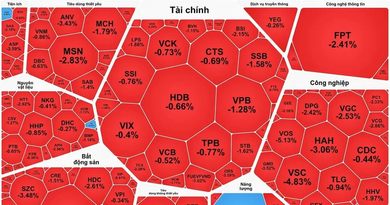
🔥
🔥
🔥
Cơ cấu lại vốn nhà nước tại doanh nghiệp: Tập trung nguồn lực, nâng cao hiệu quả
Cơ cấu lại vốn nhà nước tại doanh nghiệp đặt ra yêu cầu phân bổ nguồn lực phù hợp, gắn điều chỉnh cơ cấu sở hữu với đổi mới quản trị và nâng cao hiệu quả đầu tư. Tháo gỡ vướng mắc và đề cao trách nhiệm thực thi sẽ tạo nề
🔥
🔥
Tài chính doanh nghiệp 24/7: Mở rộng đầu tư, nhiều doanh nghiệp vượt kế hoạch lợi nhuận
Tài chính doanh nghiệp 24/7 ngày 29/10 ghi nhận hoạt động đầu tư khu công nghiệp của Viglacera, Long Hậu; hợp tác kinh doanh của Vingroup, Hòa Phát cùng kế hoạch huy động vốn cho năng lượng tái tạo của REE Energy Finance
🔥
🔥
🔥
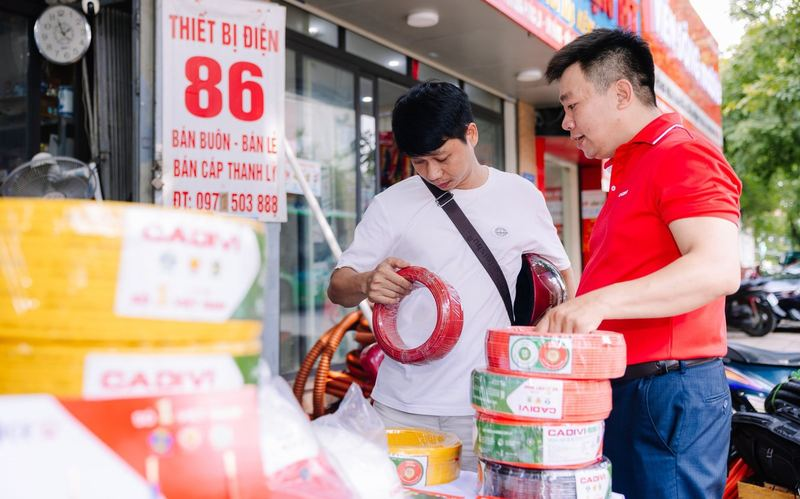
🔥
🔥
3.000 drone đang bay phục vụ nông nghiệp ở Đồng bằng sông Cửu Long, nữ Phó Viện trưởng chỉ ra con số tỷ USD đáng chú ý
TIN MỚI Bùi Minh Phương - Phó Viện trưởng Viện Phát triển không gian tầm thấp. (Ảnh: BTC). Chia sẻ trong một phiên chuyên đề thuộc khuôn khổ Diễn đàn kinh tế Mùa Thu 2026, bà Bùi Minh Phương - Phó Viện trưởng Viện Phát t
🔥
Vietravel Airlines đón thêm tàu bay, mở rộng mạng bay quốc tế dịp cuối năm
Tăng quy mô đội tàu, thêm đường bay mới Việc bổ sung tàu bay giúp Vietravel Airlines tăng cường năng lực khai thác cho giai đoạn cao điểm cuối năm 2026 và dịp Tết Nguyên đán Đinh Mùi 2027. Đây cũng là nền tảng để hãng mở
🔥
U15 Việt Nam thắng đối thủ châu Mỹ, U15 Thái Lan đại bại 0-5 tại World Cup
Theo thể thức bóng đá 8 người, các đội tuyển trên thế giới đang trải qua giai đoạn phân hạng căng thẳng với mật độ gần như 2 trận/ngày. Sau trận thua Rwanda vài tiếng, U15 Việt Nam bước vào màn so tài với U15 Nicaragua.
🔥
Tỷ phú Elon Musk tuyển loạt nhân tài tại Việt Nam, có vị trí quản lý không yêu cầu kinh nghiệm ngành ô tô
Tỷ phú Elon Musk tuyển loạt nhân tài tại Việt Nam, có vị trí quản lý không yêu cầu kinh nghiệm ngành ô tô Theo Yên Chi | 29/10/2026 07:32 AM | Kinh doanh Theo dõi Cafebiz.vn trên Tesla đang tuyển dụng 5 vị trí toàn thời
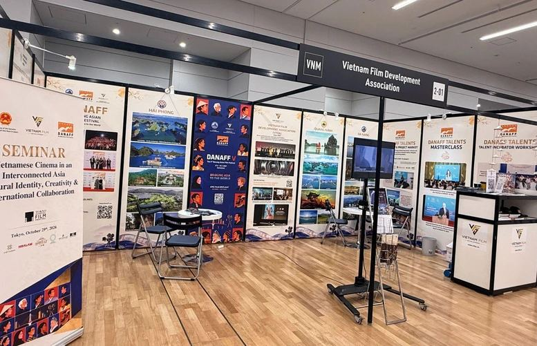
🔥
🔥
🔥
Fed giữ nguyên lãi suất bất chấp lạm phát leo thang, 2 quan chức muốn tăng ngay
Fed giữ nguyên lãi suất bất chấp lạm phát leo thang, 2 quan chức muốn tăng ngay Theo Diệp Vy | 29/10/2026 07:21 AM | Kinh doanh Theo dõi Cafebiz.vn trên Sau cuộc họp ngày 28/10, Cục Dự trữ Liên bang Mỹ (Fed) quyết định g
🔥
🔥
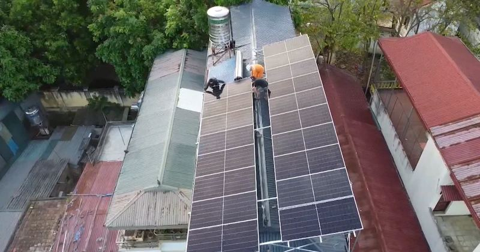
🔥[Video] Hà Nội hỗ trợ tối đa 6 triệu đồng với hộ gia đình lắp điện mặt trời mái nhà
Theo đó, đối tượng hỗ trợ là hộ gia đình có nhà ở riêng lẻ tại Hà Nội, lắp đặt hệ thống điện mặt trời mái nhà tự sản xuất, tự tiêu thụ đáp ứng các điều kiện quy định. Trường hợp lắp đặt đồng bộ hệ thống lưu trữ điện được
🔥
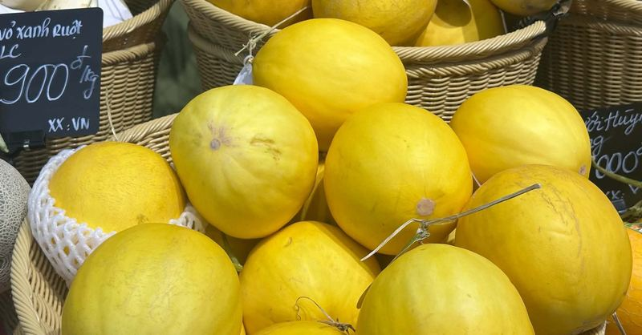
🔥
🔥
Mỹ hoan nghênh Việt Nam gia nhập Hiệp định Artemis về khám phá không gian
Facebook Twitter Lưu bài viết Bản in Copy link Theo phóng viên TTXVN tại Washington, Bộ Ngoại giao Mỹ ngày 28/10 đã ra thông cáo báo chí hoan nghênh Việt Nam gia nhập Hiệp định Artemis về khám phá không gian, nhấn mạnh q
🔥
🔥
Vành đai 2,5 thông xe kỹ thuật, xe máy tràn lên vỉa hè, ô tô nối hàng dài
VIDEO: Chật vật qua nút giao Vành đai 2,5 – Nguyễn Trãi. Sau khi đoạn Vành đai 2,5 từ Nguyễn Trãi đến Đầm Hồng thông xe kỹ thuật, phương tiện qua khu vực vẫn đông, đặc biệt vào giờ cao điểm sáng và chiều. Tại nút giao Và
🔥
🔥
Hậu biến cố Chủ tịch bị khởi tố, DN ngành điện bứt phá nhờ lãi đậm, tiền mặt lớn
Cổ phiếu TV2 tăng trần, lợi nhuận bứt tốc Trong phiên giao dịch ngày 28/10, cổ phiếu TV2 của CTCP Tư vấn Xây dựng Điện 2 (PECC2) tăng kịch trần 1.800 đồng, lên 27.850 đồng/cổ phiếu, sau khi mở cửa tại mức tham chiếu. Kết
🔥
🔥
🔥
⚡
Kazakhstan khẳng định tiềm năng mở rộng hợp tác với Việt Nam trên nhiều lĩnh vực
Facebook Twitter Lưu bài viết Bản in Copy link Thứ trưởng thứ nhất Bộ Thương mại và Hội nhập Kazakhstan, bà Aizhan Bizhanova, khẳng định Kazakhstan trân trọng tình hữu nghị, sự tin cậy và tôn trọng lẫn nhau giữa hai nước
⚡
Nới ngưỡng hỗ trợ doanh nghiệp nhỏ, đảm bảo tính liên tục của chính sách
Đại biểu Vương Quốc Thắng - Đoàn ĐBQH TP Đà Nẵng. Ảnh: Media Quốc hội. Chiều 29/10, tiếp tục chương trình Kỳ họp thứ 2, Quốc hội khóa XVI, Quốc hội thảo luận tại hội trường về dự án Luật Phát triển doanh nghiệp nhỏ và vừ
⚡
⚡
Bộ trưởng Ngô Văn Tuấn: Doanh nghiệp đã hoàn thành nghĩa vụ tài chính, thủ tục giải thể xong trong 12 giờ
Chiều 29/10, cuối phiên thảo luận về Luật Phát triển doanh nghiệp nhỏ và vừa , Bộ trưởng Bộ Tài chính Ngô Văn Tuấn phát biểu giải trình làm rõ một số vấn đề. Bộ trưởng cho biết, sẽ phối hợp chặt chẽ với cơ quan thẩm tra
⚡
Hoàn thiện chính sách hỗ trợ, tạo điều kiện để doanh nghiệp nhỏ và vừa phát triển
Quang cảnh phiên thảo luận tại hội trường chiều 29/10 - Ảnh: chinhphu.vn/Nhật Bắc Các ý kiến tập trung vào việc hoàn thiện cơ chế chuyển tiếp khi sắp xếp các quỹ hỗ trợ, làm rõ tiêu chí xác định quy mô doanh nghiệp và đổ
⚡
⚡
Đề xuất chính sách đặc thù với người nộp thuế ngừng hoạt động kinh doanh nhưng chưa đóng mã số thuế
Bộ Tài chính đề xuất quy định chính sách đặc thù đối với người nộp thuế ngừng hoạt động kinh doanh nhưng chưa hoàn thành thủ tục chấm dứt hiệu lực mã số thuế và người nộp thuế không hoạt động tại địa chỉ đã đăng ký với c
⚡
Phó Thủ tướng thường trực: Nghiên cứu đường sắt từ sân bay Gia Bình với trung tâm Hà Nội
Ngày 29/10, Phó Thủ tướng thường trực Phạm Gia Túc chủ trì cuộc họp về kết nối giao thông với sân bay Gia Bình . Theo Cổng TTĐT Chính phủ , báo cáo tại cuộc họp, Thứ trưởng Bộ Xây dựng Bùi Xuân Dũng cho biết, để đáp ứng
⚡
Dự án ngăn triều 10.000 tỉ đồng ở TP.HCM cần bổ sung gì trước ngày vận hành?
Cống Phú Xuân thuộc dự án ngăn triều 10.000 tỉ đồng - Ảnh: LÊ PHAN Tại họp báo kinh tế và xã hội chiều 29-10, đại diện Sở Xây dựng TP.HCM đã thông tin việc vận hành dự án ngăn triều 10.000 tỉ đồng tại TP. Theo đó, Trung
⚡
Không hỗ trợ doanh nghiệp dàn trải, chuyển sang kiến tạo môi trường phát triển
Theo Bộ trưởng Bộ Tài chính Ngô Văn Tuấn, định hướng dự thảo Luật Phát triển doanh nghiệp nhỏ và vừa là chuyển từ hỗ trợ dàn trải sang kiến tạo môi trường thuận lợi để doanh nghiệp phát triển. Cùng với các chính sách hỗ
⚡
CSGT sẽ khảo sát, đề xuất bố trí thêm điểm dừng, đỗ xe ở trung tâm TP.HCM
Ngày 29.10, trả lời PV Thanh Niên về tình trạng ô tô dừng, đỗ xe sai quy định ở trung tâm TP.HCM, thượng tá Đỗ Xuân Hoàn, Phó trưởng phòng CSGT Công an TP.HCM, cho biết lực lượng sẽ phối hợp các đơn vị liên quan khảo sát
🔥
🔥
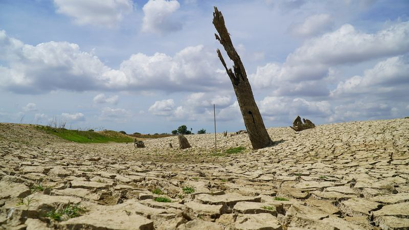
🔥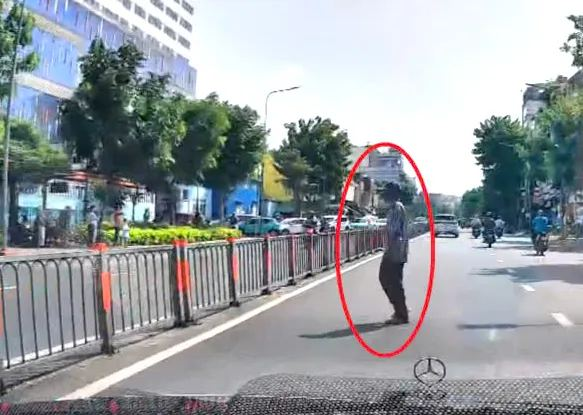
🔥
🔥
🔥
Dừng toàn bộ việc thi công dự án đường sắt trị giá hơn 4.800 tỷ đồng, sắp bán đấu giá đường ray và nhiều thiết bị
Dừng toàn bộ việc thi công dự án đường sắt trị giá hơn 4.800 tỷ đồng, sắp bán đấu giá đường ray và nhiều thiết bị Theo Như Quỳnh | 29/10/2026 16:07 PM | Kinh doanh Theo dõi Cafebiz.vn trên Danh mục đấu giá bao gồm đường
🔥
Sunlife chi trả 800 triệu đồng quyền lợi bảo hiểm cho gia đình khách hàng
Mới đây, tại TPBank chi nhánh Hai Bà Trưng (TP. Hà Nội), Công ty Bảo hiểm nhân thọ Sunlife Việt Nam (Sunlife Việt Nam) đã thực hiện chi trả 800 triệu đồng quyền lợi bảo hiểm cho gia đình khách hàng Đ.Đ.N (sinh năm 1996),
🔥
Nga đang âm thầm phát minh vật liệu cho động cơ, chịu được mức nhiệt ngang “dung nham tươi”
Nga đang âm thầm phát minh vật liệu cho động cơ, chịu được mức nhiệt ngang “dung nham tươi” Theo Trang Ly | 29/10/2026 16:01 PM | Công nghệ Theo dõi Cafebiz.vn trên VIAM hy vọng rằng hợp kim liên kim loại này sẽ đạt tiêu
🔥
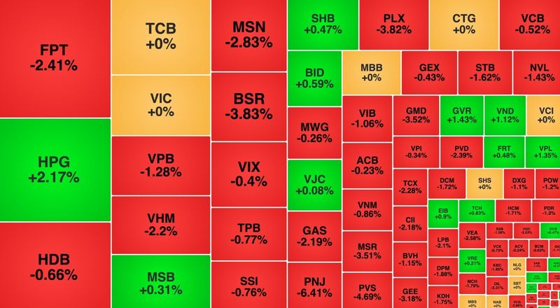
🔥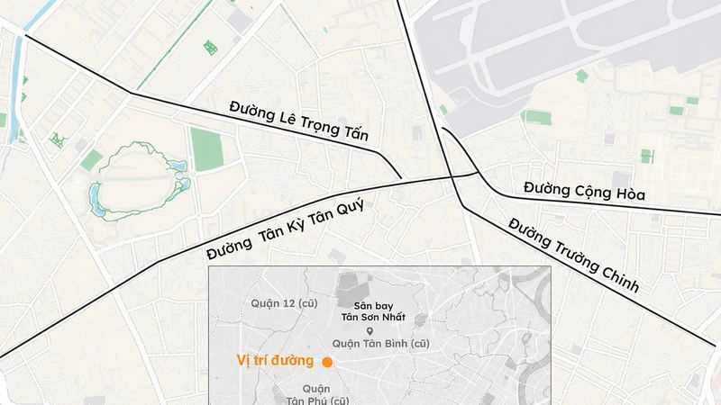
🔥
🔥
🔥
🔥
Chi phí lãi vay của Gelex Infra tăng mạnh, rót hơn 500 tỷ đồng vào chứng khoán
Gelex Infra là thành viên Tập đoàn Gelex, phụ trách mảng hạ tầng, bất động sản. Ảnh minh họa: Gelex Theo báo cáo tài chính quý 3/2026 mới công bố, CTCP Hạ tầng Gelex ( Gelex Infra , mã GEL) lãi sau thuế 351 tỷ đồng, gấp
🔥
🔥
Cuộc chơi xe điện nóng hơn bao giờ hết: Elon Musk tuyển người có thể quản lý hơn 20 dự án trạm sạc cùng lúc tại Việt Nam
Cuộc chơi xe điện nóng hơn bao giờ hết: Elon Musk tuyển người có thể quản lý hơn 20 dự án trạm sạc cùng lúc tại Việt Nam Phương Vy | 29/10/2026 08:40 AM | Kinh doanh Theo dõi Cafebiz.vn trên Chỉ hơn một tháng sau khi lập
🔥
🔥
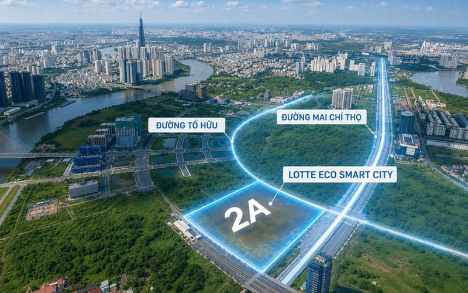
🔥Siêu dự án khu phức hợp thông minh tăng vốn lên 60.000 tỷ đồng: Vừa mới khởi công, nằm trên 6 lô đất tại trung tâm mới TP.HCM, có sự góp mặt của "ông lớn" Hàn Quốc
TIN MỚI Lotte Eco Smart City Thu Thiem nằm trên 6 lô đất tại lõi trung tâm Thủ Thiêm Theo thông tin được công bố tại Diễn đàn Kinh tế Mùa thu 2026, TP.HCM có 12 dự án đầu tư với tổng vốn hơn 337.221 tỷ đồng, tương đương
🔥
🔥
🔥
Cận cảnh cây cầu gần 10.000 tỷ đồng kết nối đại đô thị của Vinhomes và Sun Group đã lắp phiến dầm đầu tiên, dự kiến hoàn thành vào năm 2027
TIN MỚI Theo đó, Epic Holdings giới thiệu Timeless Collection, bộ sưu tập bất động sản hạng sang dành riêng cho Hà Nội, gồm năm dự án mang thương hiệu Tara: Tara Maison – Mỹ Đình; Tara Cosmo – 231 Nguyễn Trãi; Tara Vista
🔥
Trung tâm Tài chính quốc Việt Nam tại TP. Hồ Chí Minh phải có giao dịch thực tế trong tháng 11
Trung tâm tài chính quốc Việt Nam tại TP. Hồ Chí Minh (VIFC-HCM) phấn đấu có giao dịch thực tế và ngân hàng thành viên trong tháng 11/2026, qua đó từng bước đưa VIFC-HCMC chuyển sang hoạt động thực chất. Phó Thủ tướng Ng
🔥
Hiện trường kinh hoàng vụ tai nạn tàu cao tốc ở Tây Ban Nha khiến ít nhất 50 người thiệt mạng
TIN MỚI Vụ tai nạn nghiêm trọng liên quan đến một đoàn tàu cao tốc AVE của công ty đường sắt Renfe và một đoàn tàu Iryo, cả hai đều đang di chuyển từ thủ đô Madrid đến thành phố Seville. Theo thông tin từ giới chức, vụ v
🔥
🔥
🔥
🔥
Hai cựu công an trong 'tổ tư vấn' khai không biết Mr Pips làm ăn phi pháp
Hai cựu công an trong 'tổ tư vấn' khai không biết Mr Pips làm ăn phi pháp Hà Nội Hai công an và một luật sư khai tin tưởng Mr Pips làm ăn trong sạch, có nhu cầu tư vấn pháp lý nên lập nhóm làm việc, được trả công 6,4 tỷ
⚡
⚡
Lầu Năm Góc bất ngờ cách chức tướng hoạch định chiến lược giữa lúc cân nhắc tấn công Iran
Ông Brett Sylvia. (Ảnh: AP) Tướng Brett Sylvia - người giữ chức Giám đốc phụ trách chiến lược, kế hoạch và chính sách (còn gọi là J5) thuộc Hội đồng Tham mưu trưởng Liên quân - đã đột ngột rời khỏi vị trí này. Thông tin
⚡
⚡
⚡
⚡
⚡
⚡
Khối tài sản khủng trăm tỷ của Mr Pips được người tình cất giữ trong tủ quần áo
Tại phiên tòa hôm nay, Hội đồng xét xử hỏi các bị cáo chủ yếu trong bộ phận kinh doanh từng làm việc cho Phó Đức Nam. Nhiều người thừa nhận số tiền hưởng lợi, xin lỗi những người bị hại và xin Hội đồng xét xử xem xét toà
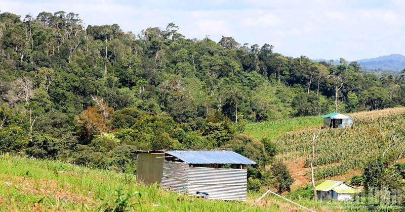
⚡
⚡
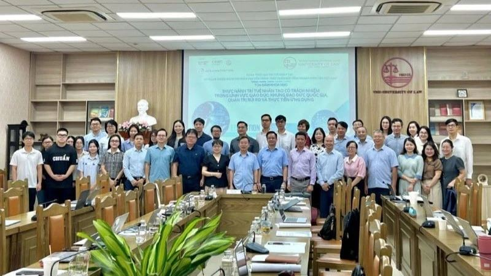
⚡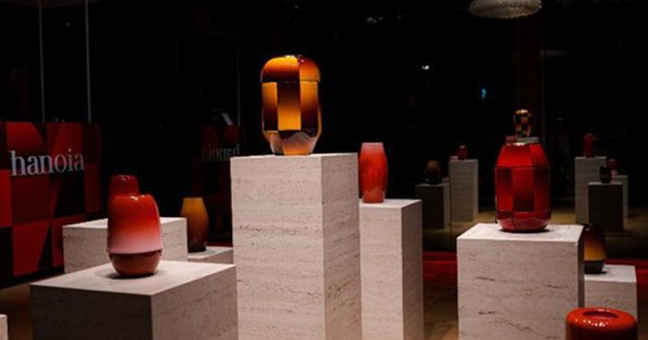
⚡
⚡
⚡
[Video] Tiêu điểm 29/10: Liệu Liên hợp quốc sẽ có nữ Tổng thư ký đầu tiên?
Cuộc đua Tổng thư ký Liên hợp quốc bước vào giai đoạn quan trọng với sự tham gia của nhiều ứng viên, trong đó có bà Lana Nusseibeh và bà Rebeca Grynspan. Khả năng lần đầu tiên một phụ nữ đảm nhiệm cương vị này trở thành
⚡
Phó Bí thư Thường trực Thành ủy Đà Nẵng Nguyễn Khắc Toàn tiếp Đoàn lãnh đạo trẻ Đảng Nhân dân Campuchia
Cùng dự buổi tiếp có Trưởng Ban tổ chức Thành ủy Đà Nẵng Đoàn Duy Tân; Phó Chủ tịch Thường trực Ủy ban nhân dân thành phố Đà Nẵng Hồ Kỳ Minh. Tại buổi làm việc, đồng chí Nguyễn Khắc Toàn chào mừng Ngài Kem Sambath và các
⚡
Đường cất hạ cánh số 2 Cảng hàng không quốc tế Phú Quốc đón chuyến bay thương mại đầu tiên
Lúc 7 giờ 5 phút, ngày 29/10, chuyến bay mang số hiệu 9G1955 của hãng hàng không Sun PhuQuoc Airways khởi hành từ Thành phố Hồ Chí Minh đã nhẹ nhàng chạm bánh xuống đường cất hạ cánh số 2, Cảng hàng không quốc tế Phú Quố
⚡
⚡
Đại biểu: Có tới 93,5% khoản vay đòi thế chấp, cần mở khóa dữ liệu để cho vay theo dòng tiền
Đại biểu Lê Hoàng Anh (Gia Lai) - Ảnh: Quốc hội Nêu vấn đề chính sách hỗ trợ cho doanh nghiệp chế biến, chế tạo tại Điều 22 của dự thảo, đại biểu Lê Hoàng Anh (Gia Lai) cho rằng quy định này mới là hỗ trợ tư vấn, chứng n
🔥
Vụ Mr Pips: Bị cáo Bàn Tòn Chày thất nghiệp tìm việc qua Facebook, lên trưởng phòng nhận 2,6 tỉ
Mr Hunter Lê Khắc Ngọ bị dẫn giải rời tòa sau phiên xét xử thứ ba - Ảnh: THÂN HOÀNG Sáng 29-10, Tòa án nhân dân TP Hà Nội tiếp tục xét hỏi các bị cáo trong vụ án lừa đảo đầu tư chứng khoán, ngoại hối do Phó Đ
🔥
Phó Thủ tướng Thường trực Phạm Gia Túc dự lễ khởi công cảng Yên Bình (Thái Nguyên)
Phó Thủ tướng Thường trực Chính phủ Phạm Gia Túc tặng hoa chủ đầu tư Dự án - Ảnh: chinhphu.vn/Phương Nguyên Cùng dự có Ủy viên Trung ương Đảng, Bí thư Tỉnh ủy Thái Nguyên Trịnh Xuân Trường; đại diện một số ban, bộ, ngành
🔥
🔥
Việt Nam-Algeria thúc đẩy hợp tác địa phương, mở rộng kết nối doanh nghiệp
Facebook Twitter Lưu bài viết Bản in Copy link Nhằm thúc đẩy quan hệ hợp tác truyền thống hữu nghị giữa Việt Nam và Algeria, đặc biệt là việc hiện thực hóa hợp tác ở cấp độ địa phương và kết nối doanh nghiệp hai bên, ngà
🔥
Redmi bán laptop mới giá nghìn đô: Cấu hình từ Intel Core 5 320, 16GB/512GB, màn mượt hơn iPad mini OLED mới
Redmi bán laptop mới giá nghìn đô: Cấu hình từ Intel Core 5 320, 16GB/512GB, màn mượt hơn iPad mini OLED mới Theo Phạm Hoàng | 29/10/2026 08:01 AM | Công nghệ Theo dõi Cafebiz.vn trên Dòng laptop mới của Xiaomi có hai kí
🔥
Hà Nội bổ sung hơn 18.600 tỷ đồng đầu tư công, ưu tiên 5 tuyến đường sắt đô thị
TIN MỚI Chiều 28/10, tại kỳ họp chuyên đề lần thứ 7, HĐND TP Hà Nội thông qua Nghị quyết cập nhật, điều chỉnh Kế hoạch đầu tư công trung hạn giai đoạn 2026-2030 và Kế hoạch đầu tư công năm 2026 cấp thành phố. Theo báo cá
🔥
🔥
Chứng khoán 29-10: Hồi phục nhẹ sau 2 phiên, VN-Index dự báo rung lắc quanh 1.780 điểm
VN-Index hồi phục nhẹ sau 2 phiên giảm điểm - Ảnh: QUANG ĐỊNH Phiên 29-10, VN-Index tăng 4,78 điểm (+0,27%) lên 1.766,65 điểm. Tuy nhiên, diễn biến phân hóa vẫn chiếm ưu thế trên bảng điện tử, cho thấy dòng tiền chưa thự
🔥
Nước cờ mới của một hãng ô tô Việt: Tham vọng đưa xe “made in Vietnam” vươn tầm thế giới
TIN MỚI KIM LONG MOTOR Huế hợp tác với VERTEX R.L. Công ty Cổ phần KIM LONG MOTOR Huế (KIM LONG MOTOR) vừa ký kết Biên bản ghi nhớ hợp tác (MOU) với Cooperativa Autogestionaria Vertex R.L. (VERTEX R.L.), doanh nghiệp hoạ
🔥
🔥
🔥
🔥
Đề xuất: Chưa tạm hoãn xuất cảnh với người bị mạo danh, giảm mức phạt để 'làm sạch' nhanh mã số thuế
Từ khi triển khai chiến dịch làm sạch mã số thuế đến nay, cơ quan thuế chỉ giải quyết chấm dứt mã số thuế cho 777.835 trường hợp - Ảnh minh họa: HỮU HẠNH Không phải nộp hồ sơ khai thuế trong thời gian k hông hoạt động Bộ
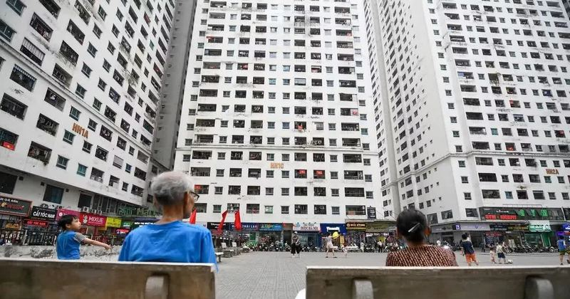
🔥Xử lý 12 dự án vi phạm của Mường Thanh: Xác định lợi ích bất hợp pháp của chủ đầu tư ra sao?
HĐND TP Hà Nội đã chính thức thông qua Nghị quyết Quy định cơ chế, chính sách đặc thù và biện pháp khắc phục hậu quả để giải quyết tồn tại vi phạm về đất đai, trật tự xây dựng gắn với cải tạo, chỉnh trang đô thị tại một
🔥
🔥
Người Việt trải nghiệm xe buýt tự lái ở Trung Quốc: Vừa đi vừa hát karaoke
Người Việt trải nghiệm xe buýt tự lái ở Trung Quốc: Vừa đi vừa hát karaoke Theo Quang Minh | 29/10/2026 06:07 AM | Công nghệ Theo dõi Cafebiz.vn trên Du học sinh Việt tại Quý Châu trải nghiệm xe buýt tự hành RoboBus, khô
🔥
Apple Creator Studio có AI trợ lý, Generate Fill và cả kho hiệu ứng MotionVFX, người dùng cũ được nâng cấp miễn phí
Apple Creator Studio có AI trợ lý, Generate Fill và cả kho hiệu ứng MotionVFX, người dùng cũ được nâng cấp miễn phí .Theo Pv | 29/10/2026 06:05 AM | Công nghệ Theo dõi Cafebiz.vn trên Apple vừa mở rộng Apple Creator Stud
🔥
🔥
Xử lý vi phạm ở HH Linh Đàm: Chủ đầu tư phải nộp và chi trả những khoản nào?
(Dân trí) - Nghị quyết vừa được HĐND TP Hà Nội thông qua áp dụng cho 12 dự án của Tập đoàn Mường Thanh, trong đó có HH Linh Đàm, buộc chủ đầu tư chi trả từ tiền bồi thường cư dân di dời, số lợi bất hợp pháp, tiền đất cho
🔥
🔥
⚡
Vinamilk chi hơn 5.200 Tỷ đồng trả cổ tức cho cổ đông vào tháng 11 năm 2026
Vinamilk sắp chi hơn 5.200 tỷ đồng trả cổ tức Theo An Thái | 29/10/2026 20:42 PM | Kinh doanh Theo dõi Cafebiz.vn trên Vinamilk dự kiến thanh toán vào cuối tháng 11 tới đây. CTCP Sữa Việt Nam (Vinamilk, mã chứng khoán: V
⚡
Giáo sư Trần Đại Lâm làm Phó Chủ tịch Viện Hàn lâm Khoa học và Công nghệ Việt Nam
Facebook Twitter Lưu bài viết Bản in Copy link Chiều 29/10, tại Hà Nội, Viện Hàn lâm Khoa học và Công nghệ Việt Nam tổ chức Hội nghị công bố và trao quyết định của Ban Bí thư bổ nhiệm Giáo sư, Tiến sỹ Trần Đại Lâm, Viện
⚡
Chủ tịch UBND TPHCM: Đổi tên đường không để người dân gặp khó về giấy tờ
Phát biểu tại buổi thảo luận tổ số 2, kỳ họp thứ 6 (kỳ họp chuyên đề) HĐND TPHCM chiều 29/10, Chủ tịch UBND TPHCM Nguyễn Văn Được nhấn mạnh, việc cập nhật, điều chỉnh thông tin địa chỉ, tên đường sau khi có thay đổi là t
⚡
⚡
Phố đi bộ Nguyễn Huệ xuất hiện cảnh tượng lạ, người dân hào hứng trải nghiệm điều chưa từng có
Phố đi bộ Nguyễn Huệ xuất hiện cảnh tượng lạ, người dân hào hứng trải nghiệm điều chưa từng có Theo Phạm Trang - Ảnh, clip: Quân | 29/10/2026 19:03 PM | Công nghệ Theo dõi Cafebiz.vn trên Robot chơi cờ với 26 cấp độ thử
⚡
Giáo sư, Tiến sĩ Trần Đại Lâm giữ chức Phó Chủ tịch Viện Hàn lâm Khoa học và Công nghệ Việt Nam
Dự hội nghị có các đồng chí Ủy viên Trung ương Đảng: Phó Giáo sư, Tiến sĩ Nguyễn Kim Sơn, Phó trưởng Ban Chính sách, chiến lược Trung ương; Giáo sư, Viện sĩ Trần Hồng Thái, Chủ tịch Viện Hàn lâm Khoa học và Công nghệ Việ
⚡
Vinhomes chuẩn bị phát hành lô trái phiếu 2.000 tỷ đồng, tiền dùng vào đâu?
Vinhomes chuẩn bị phát hành lô trái phiếu 2.000 tỷ đồng, tiền dùng vào đâu? Lệ Chi | 29/10/2026 17:05 PM | Kinh doanh Theo dõi Cafebiz.vn trên Công ty Cổ phần Vinhomes vừa thông qua kế hoạch chào bán riêng lẻ tối đa 2.00
Đề xuất đưa tài chính hàng không trở thành trụ cột cạnh tranh khác biệt của VIFC-HCMC
Các doanh nghiệp nhận Giấy chứng nhận thành viên VIFC-HCMC dưới sự chứng kiến của Thủ tướng Lê Minh Hưng cùng các đồng chí lãnh đạo Tại AEF 2026, Cơ quan điều hành Trung tâm Tài chính quốc tế Việt Nam tại TP.HCM (VIFC-HC
🔥
ĐBQH: Cần tháo gỡ việc 'cha mẹ muốn chia đất cho con nhưng vướng hạn mức đất ở'
ĐBQH: Cần tháo gỡ việc 'cha mẹ muốn chia đất cho con nhưng vướng hạn mức đất ở' Theo Anh Văn | 29/10/2026 15:09 PM | Kinh tế vĩ mô Theo dõi Cafebiz.vn trên Đại biểu Tạ Văn Hạ phản ánh nhiều gia đình muốn tách thửa, chia
🔥
🔥
Luật Đất đai (sửa đổi): Cần minh bạch dữ liệu, bảo đảm công bằng trong xác định giá đất
Toàn cảnh phiên thảo luận về dự án Luật Đất đai (sửa đổi) sáng 29/10 - Ảnh: chinhphu.vn/Nhật Bắc Sáng 29/10, tiếp tục chương trình Kỳ họp thứ hai, Quốc hội khóa XVI, dưới sự chủ trì của Chủ tịch Quốc hội Trần Thanh Mẫn v
🔥
🔥
Hội đồng Lý luận Trung ương tiếp tục khẳng định vai trò nòng cốt trong nghiên cứu và tư vấn chiến lược
Tổng Bí thư, Chủ tịch nước Tô Lâm phát biểu chỉ đạo - Ảnh: TTXVN Cùng dự có các đồng chí: Nguyên Tổng Bí thư Nông Đức Mạnh; nguyên Chủ tịch nước Trương Tấn Sang; nguyên Thường trực Ban Bí thư Phan Diễn; các đồng chí: Ủy
🔥
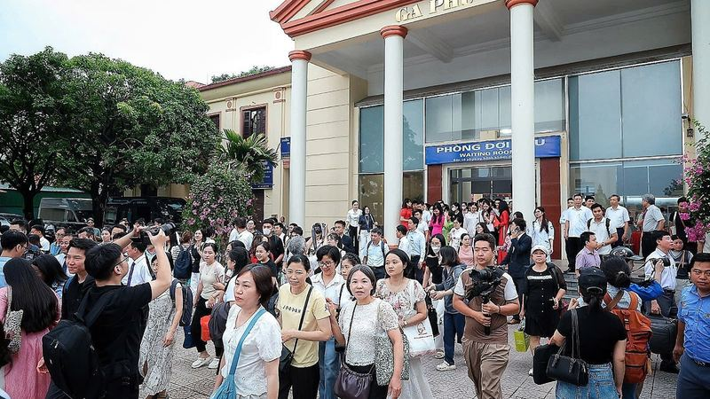
🔥
🔥
🔥
Thông báo mới từ Cơ quan Thuế: Từ nay, tất cả cá nhân có tên trong danh sách sau sẽ bị tạm hoãn xuất cảnh
TIN MỚI Theo các thông báo của Thuế cơ sở 3 TP Huế, ba cá nhân thuộc diện tạm hoãn xuất cảnh đều là người đại diện theo pháp luật của những cơ sở kinh doanh đã không hoạt động tại địa chỉ đăng ký quá 120 ngày kể từ khi c
🔥
Phát động vai trò tiên phong của sinh viên trong phòng, chống lừa đảo trực tuyến
Dự án CyberZ được triển khai dưới sự chỉ đạo của Cục An ninh mạng (A05), Bộ Công an và sự bảo trợ của Trung ương Hội Sinh viên Việt Nam, với thông điệp "Trang bị kiến thức: Làm chủ kỹ năng - Khuyến khích sáng tạo – Lan t
🔥
Hà Nội có hàng phở gà vừa công khai cả quy trình lưu mẫu thực phẩm, sẵn sàng mở tủ cho khách vào kiểm tra
TIN MỚI Bên cạnh phở bò, phở gà cũng là món ăn được nhiều người Hà Nội yêu thích, với hàng loạt địa chỉ lâu năm đã trở thành cái tên quen thuộc trong lòng thực khách. Thế nhưng, không chỉ những hàng phở kỳ cựu mới thu hú
🔥
🔥
🔥
Rèn năng lực, dựng “lá chắn” khi dạy AI cho học sinh - Bài 4: Tạo hành lang an toàn cho học sinh
Học sinh trong giờ Tin học tại Trường THPT Hùng Vương, phường Chợ Lớn, TPHCM. Ảnh: HOÀNG TRIỀU Phóng viên: Sở GDĐT TPHCM có kế hoạch triển khai QĐ 2422 thế nào để đảm bảo hiệu quả, nhất là ở khâu hỗ trợ các trường? PGS.T
🔥
🔥
Gần 70 người thiệt mạng do tai nạn tàu hỏa, Tây Ban Nha tuyên bố quốc tang
Theo Sắc lệnh Hoàng gia được đăng ngày 28/10, quốc tang bắt đầu từ 0h ngày 29/10 và kết thúc lúc 24h ngày 31/10 giờ địa phương. Phát biểu tại hiện trường vụ tai nạn ngày 28/10, Thủ tướng Tây Ban Nha Pedro Sanchez gửi lời
🔥
Thế giới sáng 29-10: Báo chí Mỹ kiện Nhà Trắng, tàu du lịch mắc kẹt ở Campuchia vì chiến sự tại Iran
T àu du lịch vòng quanh thế giới mắc kẹt tại C ampuchia Tàu Villa Vie Odyssey của Công ty Villa Vie Residences (Mỹ) thông báo đình chỉ hành trình vòng quanh thế giới tại cảng Sihanoukville, Campuchia, do chi phí nhiên li
🔥
1.450 tỷ nợ lệ phí môn bài của doanh nghiệp chờ giải thể sẽ xử lý ra sao?
764.000 người nộp thuế còn nợ lệ phí môn bài Theo Bộ Tài chính, đến ngày 31/12/2025, khoảng 764.000 người nộp thuế còn nợ lệ phí môn bài, với tổng số tiền khoảng 1.450 tỷ đồng. Đây là khoản nợ đã được hạch toán, theo dõi
🔥
Một cựu sinh viên Đại học Kinh tế TPHCM được mệnh danh “nữ hoàng bán cá”, nắm giữ khối tài sản gần 5.000 tỷ đồng
Một cựu sinh viên Đại học Kinh tế TPHCM được mệnh danh “nữ hoàng bán cá”, nắm giữ khối tài sản gần 5.000 tỷ đồng Theo An Thái | 29/10/2026 08:11 AM | Kinh doanh Theo dõi Cafebiz.vn trên Vị nữ doanh nhân này đang nắm giữ
🔥
Ai đang kiếm tiền, và kiếm thế nào từ hàng chục tỷ lượt xem phim ngắn mỗi năm?
TIN MỚI Trong nửa đầu năm 2026, micro drama đạt hơn 6,5 tỷ lượt xem trên YouTube, theo số liệu được công bố tại sự kiện The Micro Drama Frontier. Cùng kỳ, thời gian xem định dạng này tăng 50% trên toàn cầu và 70% tại khu
🔥
🔥
Vai trò của phép đo quang sai bậc cao trước khi đặt kính nội nhãn đa tiêu
Khi kính đúng độ nhưng mắt vẫn chưa nhìn rõ Theo BS.CKII Huỳnh Thị Ngọc Linh - Phó Giám đốc Chuyên môn Bệnh viện Mắt Sài Gòn II (Mắt Sài Gòn Lê Thị Riêng), quang sai là những biến dạng xảy ra khi ánh sáng đi qua hệ thống
🔥
🔥
🔥
🔥
Bán hàng online bùng nổ với 442.000 tỷ đồng, bất ngờ doanh thu chăm sóc thú cưng
TIN MỚI Báo cáo thị trường bán lẻ trực tuyến 9 tháng năm 2026 tại Việt Nam do nền tảng tổng hợp và khai thác dữ liệu Metric công bố, cho thấy doanh thu trên 4 sàn thương mại điện tử lớn tăng đến 44,7% so với cùng kỳ 2025
🔥
Một công ty tuyển hơn 12.200 người từ đầu năm, chi 10.396 tỷ cho nhân viên, quản lý “kho tiền” hơn 63.000 tỷ sinh lãi 10 tỷ mỗi ngày
Một công ty tuyển hơn 12.200 người từ đầu năm, chi 10.396 tỷ cho nhân viên, quản lý “kho tiền” hơn 63.000 tỷ sinh lãi 10 tỷ mỗi ngày Theo Anh Khôi | 29/10/2026 07:48 AM | Kinh doanh Theo dõi Cafebiz.vn trên Không chỉ ghi
🔥
🔥
Từ 1/11, loạt iPhone sau sẽ không thể thực hiện giao dịch chuyển khoản, nạp tiền trên 10 triệu đồng
TIN MỚI Từ ngày 1/11/2026, một số người dùng iPhone có thể gặp gián đoạn khi thực hiện một số giao dịch ngân hàng tại TPBank. Đáng chú ý, các giao dịch chuyển tiền, nạp ví điện tử trên 10 triệu đồng/lần hoặc vượt 20 triệ
🔥
🔥
🔥
 🔥
🔥
🔥
🔥
Liên hợp quốc thông qua nghị quyết yêu cầu chấm dứt cấm vận đối với Cuba
Facebook Twitter Lưu bài viết Bản in Copy link Ngày 28/10, Đại hội đồng Liên hợp quốc đã thông qua nghị quyết "Sự cần thiết phải chấm dứt lệnh cấm vận kinh tế, thương mại và tài chính do Mỹ áp đặt đối với Cuba." Theo phó
🔥
Danh tính cô dâu người Nga đẹp như búp bê trong lễ ăn hỏi với chàng trai Hà Nội
TIN MỚI Mới đây, mạng xã hội xuýt xoa trước những hình ảnh trong lễ ăn hỏi của cặp đôi chồng Việt - vợ Nga. Trong những hình ảnh được ghi lại, cô dâu người Nga vô cùng xinh đẹp, diện áo dài truyền thống màu đỏ, dịu dàng,
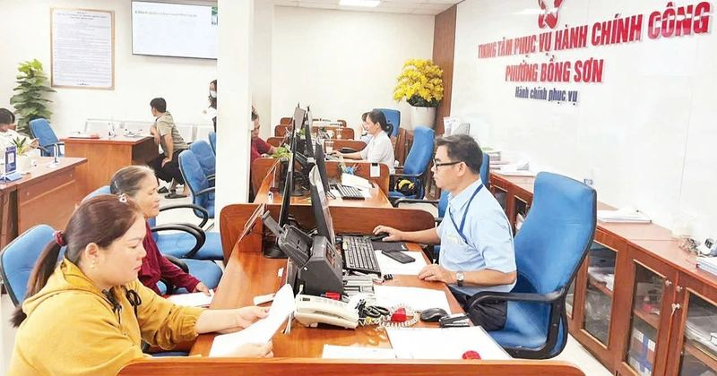
🔥
🔥
🔥
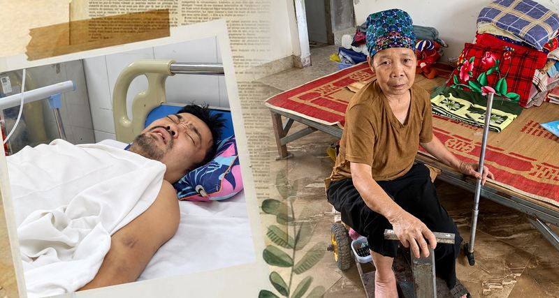
🔥Gồng gánh nuôi mẹ già đau yếu, người đàn ông nghèo lại gặp tai nạn liệt tủy
Tại khoa Phẫu thuật cột sống (Bệnh viện Việt Đức), anh Vũ Văn Đạt (SN 1988) nằm bất động trên giường bệnh sau hai ca phẫu thuật. Dù đã qua cơn nguy kịch, nhưng do chấn thương cột sống khiến anh Đạt bị liệt, mất cảm giác
🔥
🔥
Nhà ở xã hội, nhà ở cho thuê là trụ cột chiến lược bảo đảm an sinh xã hội
Không gian cho đổi mới sáng tạo Thảo luận tại hội trường, các ý kiến nhấn mạnh, việc sửa đổi, bổ sung một số điều của Luật Chứng khoán sẽ tác động trực tiếp và mang lại ý nghĩa chiến lược đối với năng lực cạnh tranh của
🔥
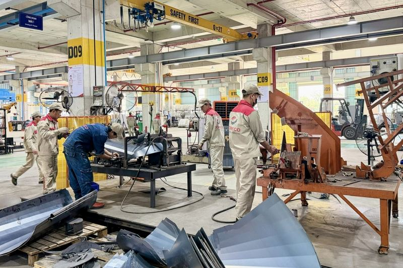
🔥Đơn hàng cuối năm khởi sắc, doanh nghiệp kỳ vọng cơ hội mới trong năm 2027
Hoạt động sản xuất, xuất khẩu tiếp tục tăng trưởng, cùng xu hướng dịch chuyển chuỗi cung ứng toàn cầu đang mở ra cơ hội đơn hàng cho doanh nghiệp Việt Nam trong những tháng cuối năm 2026 và năm 2027. Doanh nghiệp kỳ vọng
🔥
Đan Trường chia sẻ về người đàn ông SN 1961, bàn tay "chỉ ký tên và đếm tiền" đến tận nhà nấu cho ăn
TIN MỚI Mới đây, ca sĩ Đan Trường thu hút sự chú ý khi chia sẻ câu chuyện được ông bầu Hoàng Tuấn tự tay vào bếp nấu cho ăn sau những ngày làm việc liên tục để khai trương quán cà phê ở Mỹ. Đan Trường kể trên trang cá nh
🔥
🔥
Võ Hoàng Duy, phạm nhân thứ hai vụ trốn Trại giam A2 nói gì ngay khi bị bắt trong đêm?
Như Báo Tiền Phong đưa tin, tối 28/10, lực lượng công an đã bắt giữ được Võ Hoàng Duy (sinh năm 1999, trú tỉnh Gia Lai) - phạm nhân thứ 2 bị bắt trong vụ 4 phạm nhân trốn khỏi Trại giam A2 vào chiều 21/10. Võ Hoàng Duy k
🔥
🔥
🔥
Hôm nay 29-10: Khai mạc kỳ họp thứ 6 HĐND TPHCM khóa XI, nhiệm kỳ 2026-2031
Kỳ họp tiếp tục xem xét, quyết định nhiều nội dung nhằm cụ thể hóa các quy định của Luật Phát triển đô thị thành các cơ chế, chính sách phù hợp thực tiễn, cùng nhiều nội dung quan trọng khác. Kỳ họp diễn ra trong 1,5 ngà
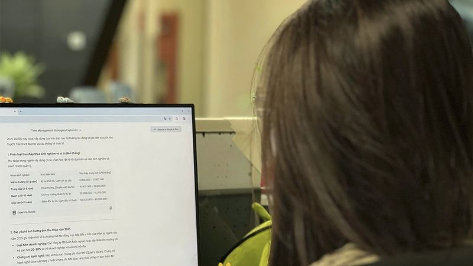
🔥
🔥
Bác sĩ tim mạch, ngôi sao bóng rổ, giáo sư hóa học: Ai sẽ lãnh đạo Serbia sau cuộc bầu cử lịch sử?
Ông Aleksandar Vucic - một nhân vật theo đường lối dân túy và chủ nghĩa dân tộc - đã lãnh đạo chính trường Serbia trên cương vị thủ tướng hoặc tổng thống kể từ năm 2014. Tuy nhiên, ông đã quyết định tổ chức bầu cử sớm và
🔥
Tin tức sáng 29-10: Quốc hội thảo luận sửa Luật Đất đai; Duyệt thiết kế đường hoa Nguyễn Huệ Tết Đinh Mùi 2027
Sáng nay 29-10, Quốc hội dành toàn bộ thời gian để thảo luận về dự án Luật Đất đai (sửa đổi) - Ảnh: QUANG ĐỊNH Quốc hội thảo luận sửa Luật Đất đai Theo chương trình kỳ họp, sáng nay 29-10, Quốc hội sẽ dành toàn bộ thời g
🔥
🔥
🔥
🔥
🔥
🔥
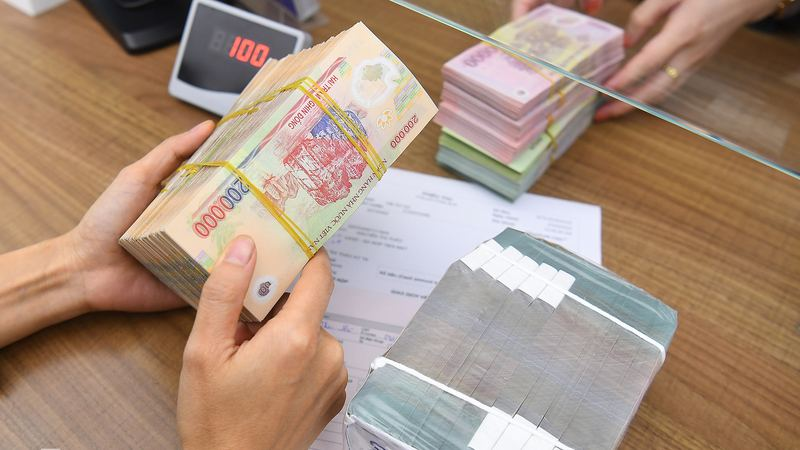
🔥Bộ Tài chính đề xuất xóa nợ lệ phí môn bài cho doanh nghiệp chờ giải thể
Bộ Tài chính đề xuất xóa nợ lệ phí môn bài cho doanh nghiệp chờ giải thể Bộ Tài chính đề xuất xóa nợ lệ phí môn bài và tiền chậm nộp phát sinh đến hết năm 2025, nhằm tháo gỡ cho doanh nghiệp hoàn tất thủ tục giải thể. Nộ
🔥
Bóng đá Tây Ban Nha đóng băng sau tai nạn tàu hỏa, Real và Barca nín thở đợi tin
Thảm kịch kinh hoàng xảy ra khi một đoàn tàu cao tốc bất ngờ đâm mạnh vào phần đuôi của một chuyến tàu khác đang dừng bánh trên đường ray, tạo nên khung cảnh hỗn loạn và thương vong nặng nề. Đến hết ngày 28/10, đã có tới
🔥
Việt Nam có gia đình với gần 30 bác sĩ, nha sĩ, dược sĩ: Một người từng cùng đại gia Trầm Bê lập bệnh viện, một người bào chế ra loại dầu gió nổi tiếng
TIN MỚI Đại gia đình nhiều thế hệ nối nghiệp ngành y Năm 2013, báo Tuổi Trẻ đăng tải câu chuyện về một đại gia đình tại TP.HCM với gần 30 thành viên làm trong ngành y. Đó là gia đình của tiến sĩ, bác sĩ Nguyễn Hải Nam, n
🔥
🔥
Từ máy bay tiêm kích đến trực thăng, Việt Nam tự chế tạo thiết bị đặc biệt từng phải nhập từ Nga và phương Tây
TIN MỚI Nhà máy A34 thuộc Quân chủng Phòng không - Không quân đã làm chủ công nghệ sản xuất moóc điện khởi động máy bay quân sự bằng linh kiện trong nước. Trước đây, những thiết bị này phải nhập khẩu từ Nga hoặc các nước
🔥
🔥
⚡
⚡
⚡
⚡
Hàng không Việt Nam đón hơn 110 triệu lượt khách, đội bay tăng thêm 26 chiếc
Các hãng bay liên tiếp tăng thêm máy bay, đáp ứng nhu cầu đi lại tăng cao của hành khách - Ảnh: C.TRUNG Theo báo cáo của Cục Hàng không Việt Nam gửi Bộ Xây dựng, lượng hành khách qua các sân bay trong 10 tháng đạt 110,4
Nghiên cứu đường sắt kết nối trực tiếp sân bay Gia Bình với trung tâm Hà Nội
Phó Thủ tướng Thường trực Phạm Gia Túc chủ trì cuộc họp về kết nối giao thông với Cảng hàng không quốc tế Gia Bình. Ảnh: chinhphu.vn Sáng 29/10, Phó Thủ tướng Thường trực Chính phủ Phạm Gia Túc chủ trì cuộc họp về kết nố
Đấu giá thành công tài sản dự án chăn nuôi bò hơn 4.500 tỷ đồng ở Hà Tĩnh
Video: Nhiều hạng mục bỏ hoang, xuống cấp tại dự án Chăn nuôi bò giống, bò thịt và trồng cây nguyên liệu Tài sản thế chấp của dự án được đưa ra đấu giá gồm hệ thống chuồng trại, thiết bị, máy móc, nhà làm việc, nhà ở côn
TP.HCM tái khởi động tìm tư liệu liệt sĩ ở Tân Sơn Nhất, bắt đầu tìm ở Bàu Bàng, Bình Cơ trong tháng 11
Ông Nguyễn Mạnh Cường, Ủy viên dự khuyết Trung ương Đảng, Ủ y viên Ban Thường vụ Thành ủy, Phó chủ tịch UBND TP.HCM, Trưởng Ban Chỉ đạo 515 TP.HCM và Thiếu tướng Cao Xuân Thắng, Phó cục trưởng Cục Chính sách - Xã hội, Tổ
Phó Thủ tướng Thường trực Phạm Gia Túc: Nghiên cứu kết nối trực tiếp đường sắt từ sân bay Gia Bình với trung tâm Hà Nội
Phó Thủ tướng Thường trực Phạm Gia Túc phát biểu kết luận cuộc họp về kết nối giao thông với Cảng hàng không quốc tế Gia Bình - Ảnh: chinhphu.vn/Phương Nguyên Tại cuộc họp về kết nối giao thông với Cảng hàng không quốc t
Toyota Innova Cross nâng cấp sẽ có lựa chọn động cơ mới, nhiều công nghệ cải tiến
Toyota Innova Cross facelift có thể thay đổi cả thiết kế, trang bị lẫn hệ truyền động - Ảnh dựng đồ họa: Cartoq Theo trang Cartoq , Toyota chuẩn bị giới thiệu Toyota Innova Cross (Innova HyCross ở Ấn Độ) phiên bản nâng c

HĐND Hà Nội kéo dài kỳ họp để xem xét cơ chế đặc thù cho 5 tuyến Metro 1 triệu tỷ đồng
HĐND Hà Nội kéo dài kỳ họp để xem xét cơ chế đặc thù cho 5 tuyến Metro 1 triệu tỷ đồng Theo Trần Hoàng | 29/10/2026 09:52 AM | Kinh tế vĩ mô Theo dõi Cafebiz.vn trên HĐND thành phố Hà Nội thống nhất kéo dài thời gian kỳ
VIS Rating duy trì xếp hạng A, nâng triển vọng của VPBankS lên “Tích cực”
TIN MỚI VPBankS được nâng triển vọng lên "tích cực" nhờ khả năng hỗ trợ của ngân hàng mẹ Theo báo cáo công bố ngày 20/10, VIS Rating duy trì xếp hạng tín nhiệm tổ chức phát hành dài hạn ở mức A đối với CTCP Chứng khoá
Miss Universe đầu tiên của Việt Nam cất hào quang ra Bắc làm dâu nhà Tiến sĩ: 16 năm sau trở lại hot cả mẹ lẫn con
TIN MỚI Mới đây, Hoa hậu Thùy Lâm bất ngờ tái xuất tại sự kiện của thương hiệu mỹ phẩm The Whoo, lập tức thu hút trọn vẹn sự chú ý của giới truyền thông và người hâm mộ. Trên trang cá nhân, người đẹp sinh năm 1987 mộc mạ
Việt Nam thúc đẩy quan hệ hợp tác nhiều mặt với tỉnh Constantine của Algeria
Facebook Twitter Lưu bài viết Bản in Copy link Để thúc đẩy quan hệ hợp tác truyền thống hữu nghị giữa Việt Nam và Algeria, đặc biệt là việc hiện thực hóa hợp tác ở cấp độ địa phương và kết nối doanh nghiệp hai bên, Đại s
Bẫy lừa tinh vi 'quỹ từ thiện nghìn tỉ': 'Nổ' tiền ảo tăng giá gấp 400 lần
Theo Cơ quan An ninh điều tra (ANĐT), năm 2021, bị can Nguyễn Thành Nhân (44 tuổi, ở P.Bình Quới, TP.HCM, hiện đã bỏ trốn) lập tổ chức mang tên Word Of Life Church Gulfport (WOL), tự giới thiệu là một tổ chức phi lợi nhu

Chung cư sát đại lộ Thăng Long sau 1 thập kỷ: Mở bán từ 2,4 tỷ, nay rao 7,8-13 tỷ
Nằm ngay đầu Đại lộ Thăng Long, Thăng Long Number One là một trong những dự án chung cư cao cấp được phát triển sớm tại khu vực phía Tây Hà Nội. Dự án do Tổng công ty Viglacera làm chủ đầu tư, khởi công vào tháng 4/2010.

⚡
⚡
⚡
Nữ đại biểu Quốc hội cần phát huy bản lĩnh và trí tuệ trong xây dựng pháp luật
Cùng dự có các đồng chí Ủy viên Bộ Chính trị: Bùi Thị Minh Hoài, Bí thư Trung ương Đảng, Chủ tịch Ủy ban Trung ương Mặt trận Tổ quốc Việt Nam; Đỗ Văn Chiến, Phó Chủ tịch Thường trực Quốc hội; các đồng chí Ủy viên Ban Bí
⚡
⚡
⚡
[Ảnh] Tổng Bí thư, Chủ tịch nước Tô Lâm gặp mặt các nữ Đại biểu Quốc hội khóa XVI
Tổng Bí thư, Chủ tịch nước Tô Lâm chủ trì cuộc gặp mặt các nữ Đại biểu Quốc hội khóa XVI. Đồng chí Nguyễn Thị Thanh, Ủy viên Trung ương Đảng, Phó Chủ tịch Quốc hội, Chủ tịch Nhóm nữ Đại biểu Quốc hội khóa XVI phát biểu
⚡
⚡
 ⚡
⚡
⚡
Cháy nhà Hà Nội: Vụ cháy 4 tầng trên phố Tràng Tiền gây hoang mang cho người dân
Cháy nhà 4 tầng trên phố Tràng Tiền, Hà Nội Theo Thanh Hà | 29/10/2026 19:45 PM | Kinh doanh Theo dõi Cafebiz.vn trên TPO - Chiều 29/10, một vụ cháy xảy ra tại nhà dân số 20 Tràng Tiền, phường Hoàn Kiếm, Hà Nội. Thời điể
⚡
Công tố viên đề nghị tử hình cựu Tổng thống Hàn Quốc sau vụ thiết quân luật
Cựu Tổng thống Hàn Quốc Yoon Suk Yeol đến tòa án tham dự phiên điều trần xem xét lệnh bắt giữ do các công tố viên đặc biệt đề nghị, ngày 9-7-2025 - Ảnh: REUTERS Theo Hãng tin Yonhap, ngày 29-10, nhóm cố vấn pháp lý đặc b
⚡
⚡
⚡
Ninh Bình: Xây dựng Trung đoàn cảnh sát cơ động vững mạnh, bảo đảm an ninh trật tự
Với tinh thần làm việc khẩn trương, nghiêm túc, chương trình báo cáo kết quả huấn luyện cảnh sát cơ động, Trung đoàn Cảnh sát cơ động dự bị chiến đấu và diễn tập phương án chống tập trung đông người gây rối an ninh trật
⚡
⚡
Du lịch Nga 2026 tăng mạnh 69 % nhờ miễn thị thực và 32 chuyến bay thẳng mỗi tuần
Quốc gia rộng nhất thế giới bất ngờ hút du khách Việt, lượng khách tăng 69%: Miễn thị thực, cho phép lưu trú tới 30 ngày, 32 chuyến bay thẳng/tuần Theo Thủy Phương | 29/10/2026 19:15 PM | Kinh doanh Theo dõi Cafebiz.vn t
⚡
Thí sinh Miss Asian 2026 cùng Hội Liên hiệp Phụ nữ phường Quy Nhơn tặng quà phụ nữ khó khăn
Hưởng ứng tháng tôn vinh phụ nữ Việt Nam, tại Hội trường Trung tâm Văn hóa phường Quy Nhơn, đoàn Miss Asian 2026 phối hợp với Hội Liên hiệp Phụ nữ phường Quy Nhơn tổ chức chương trình “Trao yêu thương - Lan tỏa nhân ái”,
⚡
Hé lộ sân khấu Chung kết Hoa hậu Việt Nam 2026 tại Quảng trường Danh Vọng
Quảng trường Danh Vọng, Khu du lịch Quốc tế Đồi Rồng, Hải Phòng trở thành công trường thi công sân khấu Chung kết Hoa hậu Việt Nam 2026. Nhìn từ trên cao, khu vực sân khấu và các dãy khán đài đã dần định hình trên mặt bằ
⚡
Bắt giám đốc trung tâm Anh ngữ ở Đà Nẵng dạy chương trình phổ thông trái phép
Ngày 29.10, Cơ quan An ninh điều tra Công an thành phố Đà Nẵng cho biết, đã khởi tố bị can, bắt tạm giam Trương Văn Thiên Tư (56 tuổi, ở đường Hải Phòng, phường Thanh Khê, thành phố Đà Nẵng), Giám đốc Trung tâm Anh ngữ T
⚡
⚡
Bắt tạm giam giám đốc trung tâm tiếng Anh vì 'thổi phồng' chương trình học
Ngày 29/10, Cơ quan An ninh điều tra Công an TP Đà Nẵng cho biết, đã khởi tố và bắt tạm giam Trương Văn Thiên Tư (1970, trú phường Thanh Khê, TP Đà Nẵng) là Giám đốc Trung tâm Anh ngữ Thiên Lập Nhân, về tội “Lừa đảo chiế
⚡
⚡
⚡
Bệnh viện Đà Nẵng: Cứu thành công cụ bà 89 tuổi mắc bệnh lý tim mạch phức tạp
Trước đó, người bệnh Trần T.H. (sinh năm 1937, trú xã Xuân Phú, thành phố Đà Nẵng) nhập Khoa Tim bẩm sinh và cấu trúc, Bệnh viện Đà Nẵng trong tình trạng mệt nhiều, tức ngực, khó thở dữ dội. Người bệnh có tiền sử phẫu th
⚡
⚡
U17 Việt Nam kết thúc đợt tập huấn tại Hàn Quốc, hướng tới World Cup 2026
Trong đợt tập huấn tại Hàn Quốc, đội tuyển U17 Việt Nam đã thi đấu 3 trận với các đối thủ gồm U18 Seoul FC, U18 Cheonan FC và câu lạc bộ Shinpyeong. Đây là những trận đấu nằm trong kế hoạch chuẩn bị của Ban huấn luyện nh
⚡
⚡
⚡
⚡
⚡
Chiến dịch 500 ngày đêm: Rà soát hồ sơ, tìm thêm thông tin về mộ liệt sỹ tập thể
Facebook Twitter Lưu bài viết Bản in Copy link Theo thông tin từ Ban Chỉ đạo Quốc gia về tìm kiếm, quy tập và xác định danh tính hài cốt liệt sỹ (Ban Chỉ đạo Quốc gia 515), qua tổng hợp dữ liệu từ các đối tác, tổ chức và
⚡
Hà Nội rào chắn làn sát vỉa hè đường Cổ Linh để thi công dự án trên cao nối cao tốc
Nút giao Đàm Quang Trung - Cổ Linh thời gian gần đây thường xuyên ùn tắc vì lòng đường bị thu hẹp để thi công các dự án - Ảnh: H.QUANG Sở Xây dựng Hà Nội vừa chấp thuận phương án tổ chức giao thông phục vụ thi công công
Liên Hợp Quốc lần thứ 34 thông qua nghị quyết yêu cầu chấm dứt cấm vận Cuba
Công sứ Nguyễn Hải Lưu, Phó Trưởng Phái đoàn Thường trực Việt Nam tại LHQ, phát biểu tại phiên họp - Ảnh: TTXVN Đây là lần thứ 34 Đại hội đồng LHQ thông qua nghị quyết thường niên về vấn đề này kể từ năm 1992, tái khẳng
Cận cảnh cây cầu gần 10.000 tỷ đồng kết nối đại đô thị của Vinhomes và Sun Group đã lắp phiến dầm đầu tiên, dự kiến hoàn thành vào năm 2027
TIN MỚI Vị trí, chất lượng nhà tái định cư tốt nhất, Hà Nội đang trong quá trình tái cấu trúc không gian đô thị nhằm từng bước hiện thực hóa định hướng phát triển theo Quy hoạch tổng thể Thủ đô tầm nhìn 100 năm. Trong bố
Giá vàng miếng, vàng nhẫn ngày 29/10 tại SJC, DOJI, Phú Quý, Bảo Tín Mạnh Hải, PNJ,...
TIN MỚI Đầu giờ sáng ngày 29/10, giá vàng trong nước chưa có sự thay đổi so với mức chốt phiên hôm trước. Cụ thể, SJC, DOJI, Phú Quý và PNJ cùng niêm yết giá vàng miếng ở mức 139,7–142,7 triệu đồng/lượng (mua vào – bán r
Người nhà Chủ tịch Novaland và 3 lãnh đạo đăng ký giao dịch cổ phiếu NVL
NVL: Giá hiện tại Thay đổi Xem hồ sơ doanh nghiệp TIN MỚI CTCP Tập đoàn Đầu tư Địa ốc No Va (Novaland, MCK: NVL, sàn HoSE) vừa công bố các văn bản thông báo giao dịch cổ phiếu của người nội bộ và người có liên quan của n
“Đại gia” bán lẻ đem hơn 19.000 tỷ đầu tư trái phiếu, “ẩn số” hơn 6.000 tỷ rót vào công ty đa ngành
“Đại gia” bán lẻ đem hơn 19.000 tỷ đầu tư trái phiếu, “ẩn số” hơn 6.000 tỷ rót vào công ty đa ngành Theo Hà Linh | 29/10/2026 06:59 AM | Kinh doanh Theo dõi Cafebiz.vn trên Tổng giá trị tiền, tiền gửi, đầu tư trái phiếu
Trù dập nhân viên sau tranh chấp, doanh nghiệp bị phạt tới 20 triệu đồng
(Dân trí) - Doanh nghiệp có thể bị phạt tới 20 triệu đồng nếu có hành vi trù dập hoặc trả thù đối với người lao động tham gia đình công hoặc người lãnh đạo đình công. Nội dung này thể hiện trong Nghị định số 283 của Chín
Tên lửa Storm Shadow giáng đòn chí mạng vào nhà máy sản xuất pin cho tên lửa Iskander, Pantsir
Hỏa hoạn tại nhà máy Energia sau đợt tập kích bằng tên lửa Storm Shadow, ngày 25 tháng 10 năm 2026. Nguồn ảnh: Exilenova+/militarnyi.com Một đòn tập kích chính xác giữa ban ngày bằng tên lửa hành trình Storm Shadow Ukrai
Thịt trâu Ấn Độ nhập khẩu giá từ 70.000 đồng/kg, người chăn nuôi trong nước khó cạnh tranh
(Dân trí) - Nhu cầu thịt trâu ở Việt Nam cao nhưng nguồn cung trong nước hạn chế, tạo dư địa cho thịt trâu nhập khẩu lấn át thị trường nhờ giá rẻ hơn nhiều so với hàng nội địa. Trong bối cảnh nguồn cung trong nước còn hạ
“Đại gia” bán lẻ đem hơn 19.000 tỷ đầu tư trái phiếu, “ẩn số” hơn 6.000 tỷ rót vào công ty đa ngành
TIN MỚI Theo BCTC quý 3/2026, CTCP Đầu tư Thế Giới Di Động (mã MWG) tiếp tục duy trì hoạt động đầu tư tài chính quy mô lớn với tổng giá trị tiền, tiền gửi, đầu tư trái phiếu và cho vay lên đến hơn 63.000 tỷ đồng, chiếm g

Tỷ phú Elon Musk tuyển loạt nhân tài tại Việt Nam, có vị trí quản lý không yêu cầu kinh nghiệm ngành ô tô
TIN MỚI Theo thông tin được đăng tải trên hệ thống tuyển dụng của Tesla, 5 vị trí gồm Quản lý kinh doanh (Sales Manager), Quản lý dịch vụ (Service Manager), Đối tác nhân sự chiến lược (HR Business Partner), Quản lý mua s
Đánh giá Kindle Aluminum: Giá gần 7 triệu đồng tại Việt Nam, có đáng mua hơn bản vỏ nhựa?
Đánh giá Kindle Aluminum: Giá gần 7 triệu đồng tại Việt Nam, có đáng mua hơn bản vỏ nhựa? Theo Đức Khương | 29/10/2026 16:06 PM | Công nghệ Theo dõi Cafebiz.vn trên Kindle Aluminum mang đến diện mạo sang trọng hơn, khả n
Đề xuất quy định về nhóm nghiên cứu tiềm năng, nhóm nghiên cứu mạnh trong cơ sở giáo dục đại học
Lấy chất lượng nghiên cứu và kết quả đầu ra làm trọng tâm Bộ Giáo dục và Đào tạo cho biết, việc xây dựng, ban hành Thông tư nhằm cụ thể hóa Điều 6 Nghị định số 125/2026/NĐ-CP ngày 06/4/2026 của Chính phủ về hoạt động kho
TP.HCM đề xuất hỗ trợ lần đầu cao nhất 530 triệu đồng/người để thu hút nhân tài
TP.HCM đề xuất hỗ trợ lần đầu cao nhất 530 triệu đồng/người để thu hút nhân tài Theo Hà Linh | 29/10/2026 15:06 PM | Kinh tế vĩ mô Theo dõi Cafebiz.vn trên Mức hỗ trợ thu nhập lần đầu với chuyên gia, kiến trúc sư trưởng.
Đưa Hồ chứa nước Ngàn Trươi vào Danh mục công trình quan trọng liên quan đến an ninh quốc gia
Hồ chứa nước Ngàn Trươi được đưa vào Danh mục công trình quan trọng liên quan đến an ninh quốc gia. Phạm vi Công trình gồm các hạng mục công trình đầu mối: đập chính, đập phụ, tràn xả lũ, các tuyến tuy nen và cống lấy nư
Định giá đất: Làm sao bảo đảm công bằng và không gây tâm lý sợ trách nhiệm?
Cơ chế xác định giá đất là một trong những nội dung được các đại biểu Quốc hội quan tâm khi thảo luận về dự thảo Luật Đất đai (sửa đổi) , sáng ngày 29/10. Giá đất phải hợp lý, công bằng, có căn cứ và có thể kiểm chứng Đạ
Thu hồi đất: Không thể coi hoàn thành bồi thường là hoàn thành trách nhiệm
Thảo luận về dự án Luật Đất đai (sửa đổi), các đại biểu Quốc hội đề nghị làm rõ trách nhiệm bảo đảm đời sống, phục hồi sinh kế cho người có đất bị thu hồi. Theo các đại biểu, chính sách cần được đánh giá không chỉ bằng t
Đúng 7h sáng nay, sân bay Phú Quốc ghi nhận một máy bay đặc biệt hạ cánh
TIN MỚI Cảng hàng không quốc tế Phú Quốc, tỉnh An Giang vừa ghi nhận một sự kiện đáng chú ý khi đường cất hạ cánh số 2 chính thức đón chuyến bay thương mại đầu tiên. Chuyến bay mang số hiệu 9G1955 của Sun PhuQuoc Airways
Hiệu quả “kép” trong kết nối, chuyển giao giữa bệnh viện tuyến dưới và tuyến trên
Chữa trị thành công những ca phức tạp ngay tại Bà Rịa Giữa tháng 10/2026, thông qua chương trình hợp tác chuyên môn giữa Bệnh viện đa khoa Bà Rịa và Bệnh viện Bình Dân, một người bệnh ung thư vú đã được phẫu thuật nội so
Pháo cao xạ Type 90 35mm của PLA: Sức mạnh xuyên phá từ đạn APDS tungsten
Tên lửa Bulava tầm bắn 10.000km, 10 đầu đạn MIRV, 'át chủ bài' của tàu ngầm Borei-A Nga kích hoạt tên lửa Bulava tầm bắn 10.000 km, 10 đầu đạn MIRV từ lòng đại dương, khẳng định vị thế răn đe hạt nhân của tàu ngầm Borei-
Mua gần 13.000m2 đất giá 1,66 tỷ đồng, hợp đồng công chứng chỉ ghi 600 triệu
Bên mua đòi tiền phần đất thiếu, bên bán nói đã giao đủ Tháng 4/2022, ông C. (ngụ tỉnh Lâm Đồng) ký hợp đồng đặt cọc để nhận chuyển nhượng thửa đất có diện tích 12.765m2 tại Đắk Lắk từ vợ chồng ông V. Hai bên thỏa thuận
An Cường - Central - Thắng Lợi Homes kick-off The Win City, khuấy động thị trường phía tây
Sự kiện giới thiệu những điểm nhấn mới về quy hoạch, trải nghiệm sản phẩm và chính sách tài chính, mở cơ hội sở hữu căn nhà đầu tiên với khoản thanh toán ban đầu từ 160 triệu đồng. Rise to Zenith - Hội tụ sức mạnh, tăng
Sông Town tạo sức hút từ kiến trúc, chất lượng bàn giao và hệ tiện ích CaraWorld
Sông Town tạo sức hút từ kiến trúc, chất lượng bàn giao và hệ tiện ích CaraWorld Ánh Dương | 29/10/2026 08:00 AM | Kinh doanh Theo dõi Cafebiz.vn trên Những căn nhà phố biển đầu tiên tại hai tiểu khu Hy Lạp và Ma-rốc thu
Khám phá tinh hoa ẩm thực và chiều sâu di sản Việt Nam tại ‘Ngày Văn hóa Việt Nam’ ở Radisson Blu Resort Cam Ranh
Khám phá tinh hoa ẩm thực và chiều sâu di sản Việt Nam tại ‘Ngày Văn hóa Việt Nam’ ở Radisson Blu Resort Cam Ranh Ánh Dương | 29/10/2026 08:00 AM | Sống Theo dõi Cafebiz.vn trên Diễn ra trong hai ngày 23-24/11/2026, chươ
Nâng cao nhận thức về HPV với thông điệp 'Ưu tiên bảo vệ mình là bảo vệ điều mình ưu tiên'
Hòa chung không khí tháng 10, tháng dành riêng để gửi trao yêu thương đến nửa kia thế giới, MSD Việt Nam khởi động chiến dịch nâng cao nhận thức về HPV với thông điệp “Ưu tiên bảo vệ mình là bảo vệ điều mình ưu tiên”, nh
Cận cảnh cây cầu gần 10.000 tỷ đồng kết nối đại đô thị của Vinhomes và Sun Group đã lắp phiến dầm đầu tiên, dự kiến hoàn thành vào năm 2027
TIN MỚI Cựu Phó chủ tịch và 3 cấp dưới nhận 295 triệu đồng Sáng nay (29/10), TAND TP Hà Nội mở phiên xét xử sơ thẩm 11 bị cáo trong vụ án khai thác cát trái phép xảy ra tại Công ty CP khoáng sản Thiên An Phát và các đơn
50 tuổi mà đẹp cỡ này, "người mẹ mất con" của Hồi Hồn Kế khiến chị em "đứng ngồi" không yên: Tiết lộ 4 thói quen giúp trẻ trung
TIN MỚI Không chỉ gây chú ý với diện mạo thanh lịch trên thảm đỏ, nữ diễn viên còn được ngưỡng mộ bởi làn da mịn màng, ánh mắt rạng rỡ và thần thái trẻ trung. Bí quyết của cô không nằm ở những phương pháp làm đẹp cầu kỳ,
Bắt Nguyễn Ngọc Hưng SN 1994, cấm đi khỏi nơi cư trú Nguyễn Thị Ngọc Diệu
TIN MỚI Công an tỉnh Đồng Tháp ngày 28/10/2026 cho biết, ngày 27/10/2026, Cơ quan Cảnh sát điều tra Công an tỉnh Đồng Tháp ra Quyết định khởi tố vụ án, khởi tố bị can đối với Nguyễn Ngọc Hưng, (sinh năm 1994, ngụ ấp An H
Tại sao ngày càng nhiều gia đình không đặt bàn trang điểm riêng trong phòng ngủ? 2 cách làm mới vừa có chỗ làm đẹp, vừa đỡ chật nhà
TIN MỚI Bàn trang điểm từng gần như là món nội thất mặc định trong nhiều phòng ngủ. Một chiếc bàn, gương, ghế ngồi và vài ngăn kéo riêng tạo thành góc làm đẹp chỉn chu, đồng thời giúp mỹ phẩm và đồ dùng cá nhân có chỗ cấ
MyVIB thêm phương án chia quỹ, thanh toán trực tuyến và chia sẻ đặc quyền sân bay
TIN MỚI Quỹ nhóm: Quản lý tiền chung minh bạch, giảm những phiền toái khi góp quỹ Khi tổ chức một chuyến du lịch cùng nhóm bạn, duy trì quỹ sinh hoạt của hội hay tập hợp các khoản đóng góp cho hoạt động chung, người đứng
Người dân nhận được cuộc gọi có nội dung sau, cần lập tức trình báo công an
Người dân nhận được cuộc gọi có nội dung sau, cần lập tức trình báo công an Theo Huỳnh Duy | 29/10/2026 07:17 AM | Xã hội Theo dõi Cafebiz.vn trên Công an cảnh báo người dân trước những cuộc gọi tưởng chừng vô hại nhưng
Man City thoát hiểm trước Brighton, giành vé vào tứ kết Cúp Liên đoàn Anh
(Dân trí) - Man City hai lần bị Brighton vượt lên dẫn trước nhưng vẫn gỡ hòa 2-2 trong 90 phút, trước khi giành chiến thắng 4-3 ở loạt sút luân lưu để tiến vào tứ kết Cúp Liên đoàn Anh. Man City phải nhờ đến loạt sút luâ
HLV Michael Carrick giảng hòa với Bruno Fernandes, kỳ vọng vực dậy Man Utd
(Dân trí) - HLV Michael Carrick đã có cuộc gặp với đội trưởng Man Utd, Bruno Fernandes để giải quyết những hiểu lầm sau nhiều tuần căng thẳng giữa hai bên. Bruno Fernandes đã bị loại khỏi đội hình xuất phát trong trận th
Hội đồng Lý luận Trung ương: 30 năm kết tinh trí tuệ, góp phần nâng tầm công tác lý luận của Đảng
Lý luận giữ vai trò đặc biệt quan trọng trong toàn bộ sự nghiệp cách mạng. Đồng chí Tổng Bí thư, Chủ tịch nước Tô Lâm nhấn mạnh: “Nền tảng lý luận vững chắc là kim chỉ nam cho hành động của Đảng, quyết định sự đúng đắn t
Vợ chồng Hải Phòng lái xe 300km tới nơi hoa mận nở sớm, chi phí 1,3 triệu/người
Tranh thủ 2 ngày nghỉ cuối tuần vừa qua, vợ chồng Minh Hiếu – Hồng Vân (cùng SN 1997) và 2 người bạn lái xe di chuyển từ nhà riêng ở phường Lưu Kiếm (TP Hải Phòng) tới Mộc Châu (Sơn La), tận hưởng bầu không khí se lạnh v
Thanh tra Chính phủ nêu loạt vi phạm của Bộ NN&MT trong cấp phép khoáng sản
(Dân trí) - Thanh tra Chính phủ chỉ ra nhiều vi phạm trong công tác quản lý, cấp phép khai thác khoáng sản tại Bộ Nông nghiệp và Môi trường. Phó Tổng Thanh tra Chính phủ Nguyễn Văn Cường vừa ký thông báo Kết luận thanh t
Biến đổi khí hậu cần được coi là tình trạng khẩn cấp về sức khỏe toàn cầu
Facebook Twitter Lưu bài viết Bản in Copy link Biến đổi khí hậu cần được coi là tình trạng khẩn cấp về sức khỏe toàn cầu nhằm thúc đẩy các chính phủ hành động, trong bối cảnh nắng nóng đã gây khoảng 3 triệu ca tử vong tr

Truyền thông Mexico nhấn mạnh ý nghĩa công trình tôn tạo tượng Chủ tịch Hồ Chí Minh tại Acapulco
Facebook Twitter Lưu bài viết Bản in Copy link Hàng loạt hãng truyền thông Mexico ngày 27/10 đưa tin đậm nét về lễ khánh thành công trình tôn tạo tượng Chủ tịch Hồ Chí Minh diễn ra cùng ngày tại thành phố cảng Acapulco,
Sức mạnh tinh thần - chìa khóa cho sức bật quốc gia: Mở đường cho những quyết sách lớn
Hội tụ sức mạnh vì mục tiêu chung Thời gian gần đây, Trung ương, Bộ Chính trị ban hành nhiều chủ trương, nghị quyết, trong đó nhấn mạnh đến công tác tư tưởng, cũng như việc bồi đắp, khơi dậy và chuyển hóa nguồn lực tinh
Cựu Thủ tướng New Zealand được trường đại học bổ nhiệm làm giáo sư thực hành
Cựu Thủ tướng New Zealand Jacinda Ardern sẽ tham gia giảng chuyên đề, cố vấn sinh viên và phối hợp với các nhà nghiên cứu tại Đại học Sydney, Australia, từ tháng 10/2026. Theo thông báo ngày 27/10 của Đại học Sydney, bà
Canyon Course: Sân mới tổ chức Tiền Phong Golf Championship 2026 có gì đặc sắc?
Khởi tranh ngày 14/11, Tiền Phong Golf Championship 2026 dự kiến quy tụ 240 golfer, đông nhất trong lịch sử. Lần đầu tiên, các golfer tranh tài trên cả hai sân Rose Course và Canyon Course thuộc tổ hợp sân 36 hố Legend V
Gửi lại tuổi 19 nơi chiến trường, người lính trở về quê nhà sau gần nửa thế kỷ
Người lính mãi tuổi 19 Ngày 28/10, tại Nghĩa trang liệt sĩ TP Đồng Nai, Hội hỗ trợ gia đình liệt sĩ TP Đồng Nai phối hợp với Sở Nội vụ và gia đình tổ chức lễ cất bốc, tiễn đưa hài cốt liệt sĩ Đào Văn Hải về an táng tại q
Tin tức Thế giới 29/10: Chưa có người chiến thắng rõ ràng trong bầu cử ở Israel
Chưa có người chiến thắng rõ ràng trong bầu cử ở Israel, phe đối lập trỗi dậy Hai ứng viên nặng ký cho chức Thủ tướng Israel. Ảnh: EPA Các cuộc thăm dò sau bỏ phiếu tại Israel ghi nhận tỷ lệ cử tri tham gia đạt mức lịch
Chiến dịch 500 ngày đêm tìm kiếm, quy tập và xác định danh tính hài cốt liệt sĩ: 'Mệnh lệnh từ trái tim'
Cụ Nguyễn Thị Tửu (95 tuổi), mẹ liệt sĩ Phan Văn Cánh, bật khóc ôm lấy hài cốt của con trai. Vào ngày 17-7-2026, Viện Pháp y quốc gia (Bộ Y tế) đã thông báo kết quả xét nghiệm ADN và chính thức thông báo: "Mẫu hài cốt li
Lần đầu tiên trong lịch sử, Việt Nam sẽ có sân bay gần 6.400 tỷ đồng nằm ở độ cao 1.600m, có lúc nhiệt độ xuống dưới 0 độ C
TIN MỚI Theo báo cáo đánh giá tình hình thực hiện Quy hoạch hệ thống cảng hàng không toàn quốc thời kỳ 2021-2030, tầm nhìn đến năm 2050 của Bộ Xây dựng, mạng lưới cảng hàng không quốc gia được quy hoạ
Văn phòng Tổng thống Hàn Quốc họp khẩn sau vụ phóng tên lửa của Triều Tiên
Facebook Twitter Lưu bài viết Bản in Copy link Văn phòng Tổng thống Hàn Quốc ngày 29/10 đã triệu tập cuộc họp khẩn cấp để đánh giá tình hình sau khi Triều Tiên phóng khoảng 10 tên lửa đạn đạo tầm ngắn về phía vùng biển p
Đại biểu đồng tình di dời khu công nghiệp khỏi trung tâm TP.HCM để tái thiết đô thị
Tại tổ thảo luận số 3 HĐND TP.HCM do ông Cao Thanh Bình, Trưởng ban Văn hóa - Xã hội HĐND TP.HCM chủ trì, các ý kiến tập trung vào việc tổ chức lại không gian đô thị, di dời khu công nghiệp ra khỏi khu vực trung tâm TP.H
Gắn học tập và làm theo Bác với xây dựng Đảng bộ vững mạnh về chính trị, tư tưởng
Thời gian qua, Đảng bộ Chi cục Dự trữ Nhà nước khu vực I đã gắn việc học tập và làm theo Bác với xây dựng Đảng về chính trị, tư tưởng, đạo đức và tổ chức, đáp ứng yêu cầu nhiệm vụ trong tình hình mới. Đảng ủy Chi cục Dự
Bộ Y tế đề xuất tiếp tục hỗ trợ đóng bảo hiểm y tế cho 1,3 triệu người dân tộc thiểu số
Bộ Y tế đề xuất tiếp tục hỗ trợ đóng BHYT cho người dân tộc thiểu số nhằm bảo đảm quyền lợi khám, chữa bệnh. Ảnh: NGỌC DUNG Đề xuất được đưa ra trong bối cảnh chính sách hỗ trợ theo Nghị định số 75/2023/NĐ-CP (sửa đổi, b
Phú Quốc sẽ tận dụng tối đa chính sách hỗ trợ cho người dân bị ảnh hưởng dự án
Ông Trần Minh Khoa - Chủ tịch UBND đặc khu Phú Quốc (tỉnh An Giang) - cam kết Phú Quốc sẽ đảm bảo quyền lợi cho người dân bị ảnh hưởng bởi dự án đường gom song hành cùng đường ĐT.975 phục vụ APEC 2027 - Ảnh: XUÂN MI Ngày
Đà Nẵng: Triệt phá đường dây lừa đảo, rửa tiền xuyên quốc gia 700 tỷ đồng
Ngày 29-10, Công an TP Đà Nẵng thông tin, Cơ quan An ninh điều tra vừa thi hành lệnh bắt bị can để tạm giam đối với Nguyễn Hùng Đạt (sinh năm 1997, trú xã Hồng Sơn, Hà Nội); áp dụng biện pháp cấm đi khỏi nơi cư trú đối v

GS Đặng Hùng Võ: Không thể đền bù căn hộ Mường Thanh theo giá mua từ hơn 10 năm trước
GS Đặng Hùng Võ: Không thể đền bù căn hộ Mường Thanh theo giá mua từ hơn 10 năm trước Lệ Chi | 29/10/2026 14:08 PM | Kinh doanh Theo dõi Cafebiz.vn trên GS Đặng Hùng Võ, nguyên Thứ trưởng Bộ Tài nguyên và Môi trường, cho
Lái xe tại Anh làm tạt nước vào người đi bộ bị phạt nặng và trừ điểm trên GPLX
Trong những ngày mưa, ô tô chạy qua vũng nước lớn có thể khiến nước bắn lên người đi bộ. Tại Anh, hành vi này không chỉ gây phiền toái cho người khác mà còn có thể khiến tài xế bị phạt một khoản tiền đáng kể. Theo The Su


Sóng biển, mồ hôi và hành trình "Làm du lịch từ chính những gì quê hương ban tặng"
Cuộc sống quanh năm dựa vào sóng nước vốn chưa bao giờ thật sự dễ dàng. Đặc biệt, với những gia đình nuôi tôm hùm, mỗi vụ nuôi là một lần đánh cược với thời tiết và những biến động khó lường của biển cả. Vốn đầu tư lớn,

Nộp đủ 2,1 tỷ tiền sử dụng đất, bị yêu cầu thêm 1,2 tỷ: Người dân thắng kiện
Từ khoản tiền sử dụng đất 2,1 tỷ thành hơn 3,3 tỷ đồng Năm 2015, bà Nguyễn Thị Thu H. chuyển mục đích sử dụng 220m2 đất nông nghiệp sang đất ở đô thị tại phường Đ., tỉnh Bình Dương (nay là phường Đ., TPHCM). Theo quy địn
Vì sao phường có nhiều lăng mộ bề thế ở Huế phải đóng cửa các nghĩa trang?
Phường Thuận An (TP Huế) vừa có thông báo đóng cửa các nghĩa trang, nghĩa địa, cấm chôn cất và an táng trên địa bàn từ ngày 31/10 nhận được sự quan tâm của người dân. Thuận An có nhiều nghĩa trang ven biển với những khu
HĐND Hà Nội kéo dài kỳ họp để xem xét cơ chế đặc thù cho 5 tuyến Metro 1 triệu tỷ đồng
TIN MỚI Tại kỳ họp thứ bảy (kỳ họp chuyên đề) HĐND thành phố Hà Nội khóa XVII, HĐND thành phố đã biểu quyết thống nhất kéo dài thời gian kỳ họp thêm một buổi vào tuần tới để tiếp tục xem xét, thông qua Nghị quyết về việc
Đừng vội mua tablet màn hình quá to nếu bạn chưa biết đến Galaxy Tab S12 Plus
Đừng vội mua tablet màn hình quá to nếu bạn chưa biết đến Galaxy Tab S12 Plus Ánh Dương | 29/10/2026 08:00 AM | Công nghệ Theo dõi Cafebiz.vn trên Khi chọn mua thiết bị di động, nhiều người dùng thường có tâm lý muốn sở
Đây là MacBook Pro cảm ứng: Màn OLED đen sâu, Dynamic Island lên Mac kích thước siêu nhỏ
Đây là MacBook Pro cảm ứng: Màn OLED đen sâu, Dynamic Island lên Mac kích thước siêu nhỏ Theo Tuấn Lê | 29/10/2026 07:31 AM | Công nghệ Theo dõi Cafebiz.vn trên Qua buổi trải nghiệm ngắn tại sự kiện, cảm ứng, màn hình OL
MacBook có cảm ứng thì hay, nhưng quả táo phát sáng mới là thứ làm tim tôi đánh rơi một nhịp
MacBook có cảm ứng thì hay, nhưng quả táo phát sáng mới là thứ làm tim tôi đánh rơi một nhịp Theo Tuấn Lê | 29/10/2026 07:18 AM | Công nghệ Theo dõi Cafebiz.vn trên MacBook Pro mới mang đến màn hình OLED cảm ứng cùng hàn
Cô gái tìm thấy gia đình sau 28 năm nhờ Dân trí, cả họ trắng đêm chờ đón
Chuyến xe đặc biệt sau đêm thức trắng 3h, trải qua đêm thức trắng, bà Cù Thị Hà (sống ở tỉnh Ninh Bình) lên chuyến ô tô rời quê nhà, hướng về sân bay quốc tế Nội Bài với tâm trạng hồi hộp. Đây là chuyến xe đặc biệt, được
Phát biểu của Tổng Bí thư, Chủ tịch nước Tô Lâm tại Lễ kỷ niệm 30 năm Ngày thành lập Hội đồng Lý luận Trung ương
Tổng Bí thư, Chủ tịch nước Tô Lâm phát biểu chỉ đạo - Ảnh: TTXVN Kính thưa các đồng chí lãnh đạo, nguyên lãnh đạo Đảng, Nhà nước, Thưa các đồng chí đại biểu, các nhà khoa học, chuyên gia, các thế hệ thành viên và cán bộ
LiveTư vấn sức khỏe: Giới thiệu vắc xin cúm chuyên biệt cho người lớn, người bệnh nền
Tại Việt Nam, cúm lưu hành quanh năm và có thể gây bệnh nặng ở mọi lứa tuổi đặc biệt ở người cao tuổi, người có bệnh nền. Cúm có thể làm trầm trọng bệnh tim mạch, đái tháo đường, bệnh phổi mạn tính, gây viêm phổi, suy hô

Bộ Tài chính được giao chủ trì soạn thảo 4 dự án Luật, nghị quyết trong năm 2027
Chính phủ phân công 12 bộ, cơ quan ngang bộ chủ trì soạn thảo 22 dự án Luật, pháp lệnh, nghị quyết thuộc Chương trình lập pháp năm 2027. Bộ Tài chính được giao chủ trì xây dựng 4 dự án, gồm 3 dự án Luật và 1 nghị quyết c
Hòa nhịp hành động “Làm và làm đúng, làm quyết liệt, hiệu quả” - Bài 4: Sự hài lòng của nhân dân là thước đo hiệu quả
Mọi thay đổi về quản trị, đo lường hiệu quả công vụ bằng KPI hay nỗ lực tháo gỡ điểm nghẽn thể chế, thúc đẩy tăng trưởng… đều phải hướng đến mục tiêu nâng cao chất lượng sống và hạnh phúc của nhân dân. Khi các chủ trương
EU rút lại đề xuất bắt đầu đàm phán về tư cách ‘thành viên liên kết’ cho Canada
Theo báo Guardian, dự thảo tuyên bố chung, vốn dự kiến được công bố sau hội nghị thượng đỉnh ở Montreal trong các ngày 29 - 30/10, đã được điều chỉnh theo hướng giảm nhẹ, chỉ đề cập đến “mối quan hệ ngày càng gắn kết h
Tổng thống Putin chỉ trích phương Tây ‘bóc lột’, tuyên bố Nga mang điều tốt đến châu Phi
Tổng thống Putin phát biểu tại Hội nghị thượng đỉnh Nga - châu Phi, ngày 28/10. (Ảnh: Sputnik) Phát biểu của nhà lãnh đạo Nga được đưa ra tại Hội nghị thượng đỉnh Nga - châu Phi lần thứ 3 ở Mátxcơva ngày 28/10. Sự kiện k
Việt Nam có quán ăn đón liên tiếp 3 nguyên thủ, đãi toàn rau muống xào tỏi, có vị còn xắn tay vào bếp cuốn nem cua bể
TIN MỚI Tối 25/10, trong chuyến thăm chính thức Việt Nam, Thủ tướng Ba Lan Donald Tusk cùng đoàn tùy tùng đã ghé Quán Ăn Ngon trên phố Phan Bội Châu, Hà Nội, để thưởng thức ẩm thực Việt Nam. Thực đơn có nhiều món ăn gần
Vắc-xin cúm chuyên biệt dành cho người cao tuổi: Nâng tầm bảo vệ tuổi cao niên
Cúm kích hoạt hàng loạt biến chứng Thời tiết giao mùa, nhiệt độ và độ ẩm biến động tạo điều kiện cho virus cúm và các tác nhân gây bệnh hô hấp lây lan. Dù phần lớn người mắc có thể hồi phục sau vài ngày, cúm vẫn tiềm ẩn
Trải nghiệm nhịp sống năng động tại Rừng Hồng - tọa độ trung tâm Eco Retreat
TIN MỚI Eco Retreat là khu đô thị trị liệu, phục hồi và tái tạo rộng 220 ha, ở cửa ngõ phía Tây TP.HCM, cách Bến Bạch Đằng khoảng 30 phút di chuyển qua Đại lộ Võ Văn Kiệt và cao tốc TP.HCM – Trung Lương. Trung tâm đô thị
Tất cả người dân đang có sổ BHXH chú ý thông báo mới nhất từ BHXH Việt Nam
TIN MỚI Thông tin về vấn đề này, BHXH Việt Nam thông tin, theo quy định của Luật BHXH 2024 (có hiệu lực từ ngày 01/7/2025), người lao động không được tham gia song song BHXH bắt buộc và BHXH tự nguyện trong cùng một thời
The Win City ra mắt Victory Gallery – Gallery trên cao độc bản tại Tây TPHCM
Victory Gallery – Gallery trải nghiệm căn hộ trên cao đầu tiên và độc bản tại Tây Tp Hồ Chí Minh Màn trình diễn nghệ thuật “The Art of Coming Home – Nghệ thuật trở về” trở thành tâm điểm tại sự kiện Kick-off The Win City
Điều tra giao dịch 51 triệu đồng trong 1 tháng, công an khởi tố Vũ Ngọc Thế SN 2002 và 4 người
TIN MỚI Cơ quan Cảnh sát điều tra Công an tỉnh Hưng Yên ngày 28/10/2026 cho biết vừa ra Quyết định khởi tố bị can đối với 05 đối tượng về hành vi “Đánh bạc”, quy định tại khoản 2 Điều 321 Bộ luật Hình sự; đồng thời áp dụ
Phát hiện bản làng ở độ cao hơn 1.000m tại Việt Nam, 7 tháng mỗi năm mái nhà phủ xanh như tấm thảm nhung
TIN MỚI Bản làng ở độ cao hơn 1.000m Nằm giữa những dãy núi cao thường xuyên có mây và sương bao phủ, bản làng này gây ấn tượng bởi những nếp nhà sàn thấp thoáng bên ruộng bậc thang. Nhưng phải đến một thời điểm nhất địn
Đi Nhật làm việc khi con vừa sinh, ngày trở về con gái đã chạy ùa ra đón
(Dân trí) - Đoạn clip bé gái ôm bó hoa ở sân bay và sà vào lòng bố khi đón người cha trở về từ Nhật Bản sau 4 năm xa cách khiến người xem xúc động vì câu chuyện đằng sau. Đoạn clip ghi lại cảnh một bé gái ôm hoa ra sân b
Thời tiết ngày 29/10: Mưa lớn ở Trung Bộ, cảnh báo nguy cơ lũ quét và sạt lở đất
Facebook Twitter Lưu bài viết Bản in Copy link Theo Trung tâm Dự báo khí tượng thủy văn Quốc gia, ngày 29/10, khu vực phía Nam Quảng Trị, thành phố Huế và phía Đông Bắc thành phố Đà Nẵng có mưa vừa, mưa to, cục bộ có nơi
Quán bánh xèo chi hơn 100 triệu làm vườn rau sân thượng cho khách tự hái ăn
Chị Ngọc Lan cho biết đây là lần đầu tiên chị trải nghiệm cách phục vụ này. Những trụ cải bẹ xanh, xà lách trong quán đều xanh tươi, lá non, không bị già. Việc được tự chọn, tự tay hái rau rồi nhờ nhân viên rửa sạch trướ
[Video] Dự báo thời tiết ngày 29/10/2026: Bắc Bộ nắng ráo, Trung Bộ mưa giảm về chiều tối
Tại Bắc Bộ, khối không khí lạnh suy yếu và lệch đông khiến trời có xu hướng nhiều mây hơn, sáng sớm một vài nơi xuất hiện sương mù nhẹ. Tuy nhiên, thời tiết trong ngày nhìn chung vẫn tạnh ráo, có nắng nhưng không quá gay
Dự báo thời tiết 29/10/2026: Hà Nội mưa rải rác, Nam Bộ tăng mưa trở lại
Theo Trung tâm Dự báo khí tượng thủy văn quốc gia, không khí lạnh suy yếu và lệch đông khiến Bắc Bộ có xu hướng nhiều mây hơn, mưa nhiều hơn và nền nhiệt giảm nhẹ. Ngày 29/10, khu vực có mưa rào và giông vài nơi, khu vực
Thời sự sáng 29/10: Bắt tạm giam 3 kế toán liên quan vụ tham ô hơn 18 tỷ đồng
Bắt tạm giam 3 kế toán liên quan vụ tham ô hơn 18 tỷ đồng Ngày 28/10, Công an tỉnh Lạng Sơn cho biết Cơ quan CSĐT đã ra quyết định khởi tố bổ sung vụ án hình sự, khởi tố bị can; đồng thời ra lệnh bắt bị can để tạm giam v